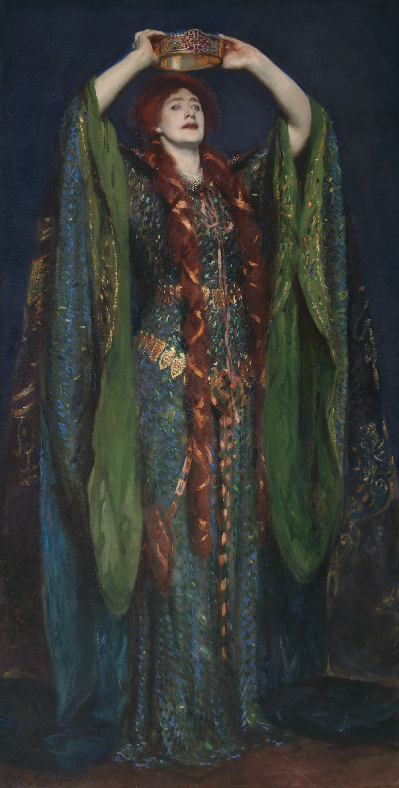

Retour à Licence to Learn, la séquence sœur sur MI5, MI6 et le monde de James Bond.
A Life in Roles: the Biography of Robert Pattinson
Robert Pattinson, the new James Bond · Seconde générale et technologique, anglais LVA · Reading and writing a life


Télécharger la séquence complète
How do a biography and a press announcement build the public image of an actor who keeps reinventing himself?
A Life in Roles: the Biography of Robert Pattinson
The story in a nutshell
On 16 November 2026, Amazon MGM Studios announced that Robert Pattinson will be the new James Bond. He is 40, he was born in London, and he is the seventh actor to play 007 in the official film series.
Before Bond, he was Cedric Diggory in Harry Potter and the Goblet of Fire, the vampire Edward Cullen in the Twilight films, then Batman in The Batman. Between big films, he chose small independent films too. His producers say he is able "to continually reinvent himself".
In this sequence, you read and write the story of a life: the biography. You also study a press announcement, the text that tells the world big news.
Final task
Write and present a portrait for our class web magazine "Lives in Progress". Choose a real, living person who has reinvented himself or herself (an actor, a musician, an athlete, a scientist, an artist), or keep Robert Pattinson.
- Written part (Lesson 8): a biography of 200 to 250 words, with a headline, a short introduction, the main steps of the life in the past, and a "News box" of 40 to 60 words written like a press announcement about the person's latest real news.
Three facts checked in two sources, listed at the end.
- Spoken part (Lesson 9): a "podcast portrait" of 1 min 30 to 2 minutes, from notes, ending with one sentence that answers the problématique.
The grid is in the Évaluations tab and in Lesson 8. You never write rumours as facts, and you respect private life.
Skills
Each activity shows the time it takes ("Time: 10 min") and the skills you practise:
Tag Skill Programme (activité langagière) CO Listening Compréhension de l'oral CE Reading Compréhension de l'écrit PO Speaking Expression orale en continu, interaction orale PE Writing Expression écrite, interaction écrite Médiation Explaining, passing on Médiation
Overview Lesson Content Skills Time 1 Breaking news: a new 007 (diagnostic) CO · CE · PO · PE 52 min 2 A boy from Barnes: early life CO · CE · PO · PE 52 min
Lesson Content Skills Time 3 Rise to fame: from Hogwarts to Twilight CE · PO · PE 52 min 4 Reinventing himself: a portrait in colours CE · PO · PE 52 (Spirale de Gorse) min 5 Anatomy of a press announcement CE · PE · PO · 52 Médiation min 6 Bond, a character recreated (mid-point CO · CE · PO 52 evaluation) min 7 Facts, rumours and private life CE · PE · PO · 52 Médiation min 8 Final task (1): writing a portrait PE 52 min 9 Final task (2): the podcast portrait PO 52 min 10 Final test CO · CE · PE 52 min
Programme et axes Programme. Programme d'anglais pour les classes de lycée général et technologique, arrêté du 5 mai 2025 publié au BO n° 22 du 29 mai 2025, annexe 4. Il s'applique en seconde générale et technologique depuis la rentrée 2025 ; son article 3 abroge l'arrêté du 17 janvier 2019 pour les langues vivantes. Niveau visé en fin de seconde : B1+ en LVA (A2+ en LVB).
Axes. Séquence ancrée dans l'axe 1 « Représentation de soi et rapport à autrui », objet d'étude « Identité mouvante : la revendication d'identités multiples à travers les arts (photographie, costumes, etc.) », et associée à l'axe 5 « Créer et recréer », objet d'étude « La machine hollywoodienne ou comment Hollywood se met en scène ». Le programme permet d'associer deux axes reliés par une problématique commune dans une même séquence.
Correspondance avec le programme de 2019 (BO spécial n° 1 du 22 janvier 2019, programme de langues vivantes de seconde générale et technologique, thématique « L'art de vivre ensemble ») : axe « Représentation de soi et rapport à autrui » et axe « La création et le rapport aux arts ».
Rappel. En seconde, cinq axes sur six doivent être traités dans l'année, dont l'axe 6 « Les pays du Commonwealth : héritages, unité, diversité », obligatoire.
Activités langagières. Le programme de 2025 en nomme six : compréhension de l'oral ; compréhension de l'écrit ; expression orale en continu ; expression écrite ; interaction orale et écrite ; médiation. Chaque lesson indique lesquelles sont travaillées, avec leur durée.
Fiche professeur
: la séquence en un coup d'œil Les notes destinées au professeur sont en français. Elles sont écrites pour tout collègue, y compris un débutant ou un contractuel qui découvre la classe la veille.
Vous découvrez cette séquence ? Commencez ici
Respirez : tout ce dont vous avez besoin est dans ce document. Chaque lesson suit la même routine ; après la lesson 1, vous la connaîtrez.
- La veille : lisez les sous-onglets « Fiche prof » et « Déroulé minuté » de la lesson (dix minutes). Imprimez la « Fiche imprimable » pour chaque élève et deux exemplaires de la « Fiche tempête ».
- S'il y a une vidéo : ouvrez le lien, regardez l'extrait, notez le début et la fin exacts dans l'emplacement prévu. Ne montrez jamais plus que l'extrait.
- En classe, suivez le minutage. Chaque lesson est minutée sur 52 minutes dans un créneau de 55 minutes : trois minutes de marge pour l'installation et le rangement.
- Au Point d'arrêt (toujours vers la minute 44) : regardez l'heure. Si vous êtes dans les temps, terminez normalement. Si vous êtes en retard, ou si la classe est agitée, passez à la Sortie de secours (8 minutes) : elle garantit les trois acquis de chaque lesson.
- Trois acquis à chaque lesson : une trace écrite dans le cahier, une prise de parole de chaque élève (même une seule phrase), et des devoirs notés dans l'agenda et sur Pronote.
- Après la lesson : remplissez la « Météo de la classe », privée (deux minutes).
Elle aide à préparer la lesson suivante et à repérer un élève qui a besoin d'attention.
Vous n'avez pas besoin d'être spécialiste du cinéma. Les corrigés donnent les réponses, et tous les faits ont été vérifiés le 17 novembre 2026 dans les sources listées dans l'onglet Références.
Faits vérifiés : la fiche d'identité de la séquence Fait Source vérifiée le 17 novembre 2026 Annonce par Amazon MGM Studios le 16 Amazon (Emily Murray) ; BBC novembre 2026 : Robert Pattinson sera James (Steven McIntosh) Bond Acteur britannique, né à Londres, 40 ans ; né le BBC ; Britannica ; Wikipédia 13 mai 1986 (quartier de Barnes) Septième acteur à jouer Bond dans la série BBC officielle ; 26e film Bond Réalisation : Denis Villeneuve ; scénario : Steven Amazon ; BBC Knight ; production : Amy Pascal et David Heyman ; production exécutive : Tanya Lapointe Tournage attendu en 2027, sortie annoncée par la BBC (article et vidéo « When will presse pour 2028 ; ni titre ni date exacte we see Robert Pattinson as Bond in cinemas? ») ; Variety Cedric Diggory dans Harry Potter and the Goblet BBC ; Amazon of Fire (2005), à 19 ans, film produit par David Heyman Edward Cullen dans les cinq films Twilight (2008 BBC ; Britannica à 2012), face à Kristen Stewart, plus de 3 milliards de dollars au box-office The Batman (2022), Tenet (2020), The Lighthouse Amazon ; BBC ; Britannica (2019), Good Time (2017), Cosmopolis (2012), Mickey 17 (2025) Antinous dans The Odyssey de Christopher Nolan Amazon ; BBC ; Britannica (juillet 2026) ; un assassin « Face Dancer », Scytale, dans Dune: Part Three (décembre 2026) Citation : « James Bond is one of the most Amazon ; BBC legendary characters in cinema, and to be entrusted with 007 is the honour of a lifetime. » Enfance : piano et guitare ; adolescent, il rejoint la Britannica ; Wikipédia Barnes Theatre Company ; premier petit rôle coupé au montage dans Vanity Fair (2004)
Fait Source vérifiée le 17 novembre 2026 Les six Bond précédents : Sean Connery, George BBC Lazenby, Roger Moore, Timothy Dalton, Pierce Brosnan, Daniel Craig
Ce qui n'est pas confirmé (à ne jamais présenter comme un fait) : le nombre de films prévus dans le contrat (« reports » d'une semaine, non confirmés officiellement, selon la BBC), le titre du film, la date exacte de sortie, les lieux de tournage.
La spirale de Gorse La spirale de Gorse est la méthode de lecture créée par Carole Paoli Pompougnac et mise au point seule, avec ses élèves. Son nom rend hommage à Madame Armandine Gorse. Sur un seul document clé, la classe fait plusieurs tours qui se resserrent, de l'évident jusqu'au sens construit :
- What I see : ce que je vois, sans interpréter.
- What I understand : ce que je comprends du document.
- What I deduce : ce que j'en déduis, avec une preuve prise dans le document.
- What it says about the problématique : ce que cela dit de la question de la séquence.
Programme : ce que demande l'institution Texte de référence : arrêté du 5 mai 2025, BO n° 22 du 29 mai 2025, annexe 4 (programme d'anglais pour les classes de lycée général et technologique), en vigueur en seconde depuis la rentrée 2025. Le programme de seconde du BO spécial n° 1 du 22 janvier 2019 est abrogé pour les langues vivantes ; ses intitulés équivalents sont rappelés dans l'Accueil. Niveau visé en fin de seconde : B1+ en LVA. Le « + » signifie que le niveau supérieur est atteint dans au moins une activité langagière. Six activités langagières : compréhension de l'oral ; compréhension de l'écrit ; expression orale en continu ; expression écrite ; interaction orale et écrite ; médiation.
Axes : axe 1 « Représentation de soi et rapport à autrui » (objet d'étude « Identité mouvante : la revendication d'identités multiples à travers les arts (photographie, costumes, etc.) ») et axe 5 « Créer et recréer » (objet d'étude « La machine hollywoodienne ou comment Hollywood se met en scène »). Étude de la langue : present perfect for news ; past simple and dates ; time clauses (when, after, before, at the age of) ; contrast (however, although, instead of + -ing) ; reporting verbs and reported speech ; comparatives and superlatives ; hedging (is reported to, is expected to, may, might) ; linking words of a biography ; intonation and stress ; revision.
Évaluations prévues Quand Type Contenu Onglet Lesson 1 Diagnostic de début Courtes tâches d'écoute, Lesson 1 et de séquence d'écriture et d'oral, non notées Évaluations Lessons 1 Formative Flash quiz en début de lesson, Chaque lesson à9 phrase de sortie en fin de lesson Lesson 6 Intermédiaire Reading check (QCM de 10 Lesson 6 et (formative) questions) et une prise de parole Évaluations d'une minute Lessons 8 Sommative Tâche finale : portrait écrit et Lessons 8, 9 et et 9 podcast portrait Évaluations Lesson 10 Sommative Évaluation finale : CO, CE, PE, Lesson 10 et notée sur 20 Évaluations
Chaque évaluation comporte une fiche élève, une grille professeur, une grille d'autocorrection, un corrigé, un barème avec un critère de langue, la méthode « Savoir prendre une correction » et un encadré « Mes objectifs ». Corrigés et grilles figurent uniquement dans la version prof, sauf le court auto-test du bloc « L'élève ne peut pas venir en classe ou est hospitalisé ».
Ton et précautions Vie privée : on étudie la carrière publique de l'acteur. La séquence ne parle ni de sa compagne, ni de son enfant, ni de ses anciennes relations. La lesson 7 en fait une règle d'écriture : un biographe respecte la vie privée. Apparence : la presse a souvent commenté le physique de l'acteur. En classe, on décrit un portrait ou une photographie sans jamais commenter le physique d'un
camarade. Rumeurs : une information « reported » ou « expected » n'est pas un fait. Les élèves apprennent à le dire avec les bons mots (lesson 7). Échanges en classe : pas de débat en deux camps. Chacun parle à son tour, avec un exemple pris dans un document. Images : uniquement des photographies sous licence libre de Wikimedia Commons, créditées, et le portrait de John Singer Sargent, Ellen Terry as Lady Macbeth, œuvre du domaine public (Tate Britain). Aucune image de film.
Matériel Un vidéoprojecteur et des enceintes (lessons 1, 4, 6). Un cahier ou une partie du classeur intitulée « My Lives in Progress notebook », et des flashcards (cartes A7 ou application de flashcards de l'établissement). Des téléphones ou les enregistreurs de l'établissement pour la lesson 9 (ou une présentation en classe). Un accès au CDI ou à la salle informatique pour la recherche de sources (entre les lessons 7 et 8).
Droit d'auteur L'annonce d'Amazon MGM Studios et l'article de la BBC sont protégés : la séquence n'en cite que de courts extraits, avec leur source. Les textes de lecture, les textes lus par le professeur et les modèles ont été écrits pour cette séquence à partir de faits vérifiés. Le portrait de John Singer Sargent, Ellen Terry as Lady Macbeth, est une œuvre du domaine public (Tate Britain). Il peut être montré en classe et mis en ligne, avec son crédit complet.
Lesson 1 · Breaking news: a new 007
Télécharger la lesson 1
Fiche imprimable (PDF) Word LibreOffice Fiche tempête (PDF) Word LibreOffice Version dys (PDF) Word LibreOffice
Lesson diagnostique. Axe 1 et axe 5. Étude de la langue : le present perfect pour annoncer une nouvelle.
Spirale de Gorse

Document travaillé : le fact file « Robert Pattinson is the new James Bond » (texte écrit pour la séquence d'après les articles d'Amazon et de la BBC du 16 novembre 2026).
We read one document, the fact file « Robert Pattinson is the new James Bond », in four turns, then the pointe. Each turn goes a little deeper. Take notes in the spiral of your printable sheet, then share.
1. Je remarque. What jumps out at first sight. No interpretation yet.
Question. When you first read this text, what do you notice: the layout, the first sentence, the kind of news?
Sentence starter: I notice… / The first thing I see is… / This text looks like…
2. Je repère. A clearer detail, a precise passage.
Question. Find the date, the studio and one fact about the actor. Then find two expressions that show some information is not certain yet.
Sentence starter: I can see the date… / The studio is… / The text says… is expected to… / is reported to…
3. Je comprends. What these elements, together, help you understand.
Question. What kind of text is this? What does it tell us about Robert Pattinson's career, in a few words?
Sentence starter: This text is… / It tells us that… / He has played…
4. J'anticipe. The aim of the text, its main idea.
Question. Why does the fact file list his past roles before it says he is the seventh Bond? What is the aim of this text?
Sentence starter: I anticipate that the text wants to… / The main idea is… / The past roles are there because…
5. Je trouve le sens. The pointe: a precise question, what you can defend, and the limit.
Question. How does this fact file begin to build the public image of the actor? What can you defend with words from the text? What does a short fact file not tell us?
Sentence starter: The precise question is… / I can defend that… because… / The limit is…
Version prof
Tenez l'ordre des tours. Au tour 1, toute interprétation est renvoyée à plus tard : « Not yet! What do you notice? »
1. Je remarque. Expected answers. It looks like a news text. The first sentence gives a big fact: Amazon MGM Studios announced that Robert Pattinson will play James Bond, on Monday 16 November 2026.
2. Je repère. Expected answers. Date: Monday 16 November 2026. Studio: Amazon MGM Studios. One fact: he is a British actor, born in London, 40; or he is the seventh actor to play Bond. Uncertain information: filming « is expected to start in 2027 »; the film « is reported to come out in 2028 »; « The title has not been announced yet. »
3. Je comprends. Expected answers. It is a fact file written from official news. It presents a British actor of 40 who has played very different characters (Cedric Diggory, Edward Cullen, Batman, Antinous) and who will be the seventh James Bond, in the 26th Bond film, directed by Denis Villeneuve.
4. J'anticipe. Expected answers. The list of roles shows that he keeps changing. The aim of the text is to give the news and to present him as a legitimate, versatile new 007, not only as a star of one film.
5. Je trouve le sens. - The precise question: how does a short fact file begin to build the public image of a new Bond? - What I can defend: the text chooses official facts, a short career and a proud statement (« the honour of a lifetime ») to present the actor as ready for the role. - The limit: it is not a full biography. Some dates are not certain, and the title of the film is still unknown.

Today you will: discover the big news of 16 November 2026, read a fact file about Robert Pattinson, and write your own short news flash.
1. Warm-up: the photograph (PO)
Time: 7 min. Speaking (PO).
- Describe the man: his clothes, his attitude, the place. Where do you think he is?
- Is this a private photo or a public photo? How do you know?
- Do you know this actor? In which films?
Useful phrases: In the picture I can see… He is wearing… He looks… I think he is at… because…
2. Getting to know you (diagnostic, CO and PE)
Time: 9 min. Listening (CO) and Writing (PE).
Part A, listening (4 min). Your teacher reads a short radio news flash twice. Tick the right answer.
- The new James Bond is: ☐ 30 ☐ 40 ☐ 50 years old.
- He was born in: ☐ London ☐ Paris ☐ New York.
- The studio made the announcement on: ☐ Monday ☐ Friday ☐ Sunday.
- The director is: ☐ Christopher Nolan ☐ Denis Villeneuve ☐ Matt Reeves.
- The title of the film is: ☐ known ☐ not known yet ☐ a secret until next week.
Part B, writing (5 min). Write three sentences about a famous person you like: who the person is, what he or she does, why you like him or her.
3. Reading: the fact file (CE)
Time: 12 min. Reading (CE).
Robert Pattinson is the new James Bond (text written for this sequence from the Amazon and BBC articles of 16 November 2026)
On Monday 16 November 2026, Amazon MGM Studios announced that Robert Pattinson will play James Bond. The studio shared the news on social media, with a picture of the actor as 007.
Pattinson is a British actor. He was born in London and he is 40. He has played very different characters: Cedric Diggory, a student at Hogwarts, in Harry Potter and the Goblet of Fire; Edward Cullen, a vampire, in the Twilight films; and the superhero of The Batman. This year, he has appeared as Antinous in Christopher Nolan's The Odyssey.
He is the seventh actor to play the famous spy, after Sean Connery, George Lazenby, Roger Moore, Timothy Dalton, Pierce Brosnan and Daniel Craig. It will be the 26th Bond film. Denis Villeneuve is directing it, from a script by Steven Knight. Filming is
expected to start in 2027, and the film is reported to come out in 2028. The title has not been announced yet.
In a statement, the actor said: "James Bond is one of the most legendary characters in cinema, and to be entrusted with 007 is the honour of a lifetime."
- Who announced the news? When? How?
- Complete the ID card: name, nationality, place of birth, age, job.
- Name three characters he has played. What kind of character is each one?
- Who will direct the film? Who wrote the script?
- Find two pieces of information that are not certain yet.
- In his statement, how does the actor feel? Quote two words.
4. Étude de la langue: the present perfect for news
Time: 3 min (rule) + 4 min (exercise). Writing (PE).
Rule. To give news, journalists often use the present perfect (have / has + past participle): Amazon MGM Studios has announced the new Bond. He has played many characters. When we give a precise date or time, we use the past simple: The studio announced the news on 16 November.
Exercise 1. Present perfect or past simple?
- Breaking news: the studio ___ (choose) a new 007!
- The announcement ___ (come) on Monday.
- Pattinson ___ (work) with Denis Villeneuve before, on Dune: Part Three.
- In 2005, he ___ (play) Cedric Diggory.
- The title ___ (not / be) announced yet.
5. Writing: my news flash (PE)
Time: 6 min. Writing (PE).
Write a news flash of four or five sentences for the school radio. Start with Breaking news! Use the present perfect once, and the past simple with a date once.
Point d'arrêt (minute 44)
- Speaking round: one news sentence each (PO)
Time: 5 min. Speaking (PO), every student.
Each student reads one sentence of the news flash, like a radio presenter. The class chooses the best "radio voice".
Building your vocabulary
Theme words Words to speak and argue an actor, a role, a character I think that… / In my opinion… a studio, a director, a script It seems that… / He looks… to announce, an announcement, a statement According to the text… a spy, 007, a franchise Maybe… / Probably… / Certainly… breaking news, to be cast as First… then… finally…
Flashcards. Make the flashcards of the lesson (method in the Méthodes tab): front = the word or the structure, back = a definition in English, an example from the lesson and a drawing or a translation. Revise them for two minutes at home tonight, then in two days, then at the start of the next lesson (Flash quiz).
Model flashcard 1. Front: to be cast as. Back: to be chosen to play a role. "Robert Pattinson has been cast as James Bond." Drawing: a film clapperboard.
Model flashcard 2. Front: present perfect for news. Back: has / have + past participle, no precise date. "The studio has announced the new Bond."
Blank flashcard. Front: __ Back: definition __ example __ drawing or translation __
Trace écrite
Lesson 1. Breaking news: a new 007. On 16 November 2026, Amazon MGM Studios announced that Robert Pattinson will play James Bond. This British actor, born in London, is 40. He has played very different characters, from a vampire in Twilight to Batman. He is the seventh actor to play 007. To give news, we use the present perfect; with a precise date, we use the past simple.
Minutes Activité Activité langagière Pastille Professeur
(programme)
0à3 Installation, date Interaction orale PO Accueille, écrit la date
et titre au tableau en anglais
3 à 10 Photographie de Expression orale en PO Pose les questions,
Venise continu, interaction repère le niveau de
orale chacun (diagnostic)
10 à 19 Diagnostic : Compréhension de CO, PE Lit le texte deux fois,
écoute et écriture l'oral, expression ramasse la partie B
écrite
19 à 31 Lecture de la fact Compréhension de CE Travail en binômes,
file l'écrit puis correction
31 à 38 Present perfect : Expression écrite PE Explique, corrige au
règle et exercice tableau
38 à 44 News flash Expression écrite PE Circule, aide
44 Point d'arrêt En retard ? Sortie de
secours
44 à 49 Tour de parole Expression orale en PO Chaque élève parle
continu une fois
49 à 52 Trace écrite et Expression écrite PE Dicte ou projette
devoirsActivité langagière Dans cette lesson Durée (programme 2025) Compréhension de l'oral Diagnostic partie A (news flash lu par le 4 min professeur) Compréhension de l'écrit Fact file « Robert Pattinson is the new 12 James Bond » min Expression orale en continu Description de la photographie ; lecture 8 min du news flash
Activité langagière Dans cette lesson Durée (programme 2025) Expression écrite Diagnostic partie B ; exercice ; news flash 18 ; trace écrite min Interaction orale et écrite Questions et réponses sur la 4 min photographie Médiation Pas dans cette lesson 0 min
Diagnostic (non noté). Le professeur remplit la grille diagnostique (onglet Évaluations) : une ligne par élève, trois colonnes (CO, PE, PO), avec ✓ (acquis), ~ (en cours) ou ○ (pas encore). Les résultats servent à former les binômes et à prévoir l'aide, jamais à étiqueter un élève. Ce diagnostic est propre à la séquence : il ne remplace pas les tests de positionnement nationaux.
Texte de la partie A, à lire deux fois (écrit pour la séquence, faits vérifiés) :
Good morning, it's eight o'clock and here is the news. Big news for film fans: the new James Bond is the British actor Robert Pattinson. He is forty years old and he was born in London. The studio, Amazon MGM, made the announcement on Monday. The film will be directed by Denis Villeneuve. The title of the film is not known yet.
Corrigé et grilles
Corrigé (prof), diagnostic partie A. 1. 40. 2. London. 3. Monday. 4. Denis Villeneuve.
- not known yet.
Corrigé (prof), lecture. 1. Amazon MGM Studios, on Monday 16 November 2026, on social media with a picture of the actor as 007. 2. Robert Pattinson, British, born in London, 40, actor. 3. Cedric Diggory (a Hogwarts student), Edward Cullen (a vampire), Batman (a superhero), Antinous (a character from The Odyssey). 4. Denis Villeneuve; Steven Knight. 5. Filming "is expected to start in 2027"; the film "is reported to come
out in 2028"; the title "has not been announced yet". 6. Proud, grateful, honoured: "legendary", "honour of a lifetime".
Corrigé (prof), exercise 1. 1. has chosen 2. came 3. has worked 4. played 5. has not been.
Grille du news flash (formative). Four or five sentences: /2 · present perfect and past simple correctly used: /2 · radio style (Breaking news, short sentences): /1. Total /5, non comptée dans la moyenne.
Sortie de secours
En retard au Point d'arrêt, ou classe agitée : remplacez les minutes 44 à 52 par ce plan.
- Minutes 44 à 47 : projetez la trace écrite ; les élèves la copient en silence.
- Minutes 47 à 51 : « chaîne de nouvelles » : chaque élève dit une phrase commençant par Robert Pattinson has… ou The studio has…, le plus vite possible.
Tout le monde parle.
- Minute 51 : devoirs écrits au tableau.
Fiche tempête (exercice de repli, imprimable) Pour un élève qui a besoin de s'isoler. Grâce à cette fiche imprimée, il emporte son travail et le poursuit ailleurs, sous la surveillance d'un autre adulte (vie scolaire, CDI, infirmerie), comme convenu avec la vie scolaire en début d'année.
Fiche tempête, for a calm moment on your own. Take your time. No mark, no rush.
Task. 1. Copy the five words of the first column of the vocabulary box and draw a small picture for each. 2. Read the fact file again, quietly. 3. Write three sentences about Robert Pattinson with He has… (present perfect).
When you feel ready, write one sentence: Right now I feel… / Tomorrow I would like to… You can keep this sentence for yourself.
Placement : binômes de niveaux mélangés après le diagnostic (dès la lesson 2).
Tour de parole : interrogez d'abord les élèves les plus discrets, quand la tâche est encore facile. Acceptez une phrase lue dans le cahier. Téléphones : dans les sacs. Bruit : arrêtez l'activité, attendez en silence, reprenez avec une consigne courte en anglais. Admiration ou moquerie : certains élèves sont fans, d'autres se moquent de Twilight. Accueillez les deux avec humour, et ramenez au texte : « What does the text say? »
Météo de la classe (prof, privé) Bloc privé, jamais montré aux élèves. À remplir en deux minutes après la lesson.
Aujourd'hui Beau Nuageux Orageux temps Humeur générale du groupe ☐ ☐ ☐ Énergie au début / à la fin ☐/☐ ☐/☐ ☐/☐ Chaque élève a-t-il parlé une fois ☐ oui ☐ ☐ non : noms à solliciter en ? presque premier la prochaine fois Élève(s) à voir discrètement la prochaine fois (initiales seulement)
Une ligne pour la prochaine fois : ce qui a marché, ce qu'il faut changer.
Aide (prof) : un élève en difficulté émotionnelle Note bienveillante, version prof uniquement. La séquence parle de célébrité, d'apparence, de rumeurs et de commentaires du public. Certains élèves vivent des moqueries sur leur physique ou des rumeurs sur les réseaux sociaux. Si un élève se tait, pleure ou quitte l'activité :
- Ne posez pas de question devant la classe. Dites calmement : « You can take a break. Take your sheet with you. »
- Proposez la Fiche tempête imprimée de la lesson (ci-dessous). L'élève continue à travailler, seul et au calme.
- Si besoin, l'élève se rend à la vie scolaire, au CDI ou à l'infirmerie avec la fiche, comme convenu avec la vie scolaire en début d'année, et poursuit sous la
surveillance d'un autre adulte.
- Après la lesson, un mot en privé : « J'ai vu que c'était difficile aujourd'hui. Veux-tu en parler à quelqu'un ? » Transmettez ensuite par les voies habituelles (CPE, infirmière, assistante sociale, psychologue de l'Éducation nationale), sans détail devant quiconque.
- Ne demandez jamais à un élève de parler de sa propre apparence ou de sa vie privée. Les tâches orales portent sur Robert Pattinson, sur une personne publique choisie ou sur un personnage inventé. Dans un écrit personnel, chacun a le droit de ne pas tout dire.
Fiche prof
Objectif : lancer la séquence par une actualité réelle et vérifiée, repérer le niveau du groupe, installer le genre de la biographie (une vie racontée par étapes). Pourquoi commencer par la nouvelle ? Une annonce de presse est une biographie en miniature : qui, quoi, depuis quand, pourquoi lui. Les élèves le découvriront à la lesson 5. Vérification : tous les faits du texte viennent de l'annonce d'Amazon et de l'article de la BBC du 16 novembre 2026 ; la date de tournage 2027 vient de la vidéo de la BBC « When will we see Robert Pattinson as Bond in cinemas? ». Le film n'a pas encore de titre officiel. Prononciation : Pattinson /ˈpætɪnsən/, announcement /əˈnaʊnsmənt/, legendary /ˈledʒəndri/, honour /ˈɒnə/ (h muet).
- Learn the vocabulary box and make two flashcards.
- Learn the trace écrite.
- Write three more sentences of news about a film, a series or a game you like, with the present perfect.
Lesson 1 · Breaking news: a new 007.
- Look at the photo. Say: He is wearing… He looks…
- Listen to your teacher. Tick the answers (Part A).
- Write 3 sentences about a famous person you like.
- Read the fact file. Underline the dates in one colour.
- Fill in the ID card: name, nationality, city, age, job.
- Write 2 sentences: He has played… / The studio has announced…
Word bank: actor, role, character, studio, director, script, announcement, spy. Has + past participle = news. Past simple + date = a precise moment.
Lesson 1 · Breaking news: a new 007 · Name: __ · Date: __
- The photo: three words to describe the man: __ __ __
- Diagnostic Part A: 1 ☐☐☐ 2 ☐☐☐ 3 ☐☐☐ 4 ☐☐☐ 5 ☐☐☐
- ID card: name __ nationality __ place of birth __ age __ job __
- Three characters he has played: __ __ __
- Two pieces of information that are not certain: __ __
- Exercise 1: 1 __ 2 __ 3 __ 4 __ 5 __
- My news flash: __
- Trace écrite (copy it here): __
L'élève ne peut pas venir en classe ou est hospitalisé
Travail à distance, à transmettre par l'ENT, par la vie scolaire ou par la famille. Aucune note. Durée : 30 à 40 minutes, en plusieurs fois si nécessaire. La fiche imprimable et la trace écrite de la lesson accompagnent ce plan.
Work plan.
- Read the fact file "Robert Pattinson is the new James Bond" (Élèves tab) twice.
- Fill in questions 3 to 5 of the printable sheet.
- Learn the rule of the Étude de la langue and do Exercise 1.
- Write a news flash of four sentences about Robert Pattinson, with one present perfect and one past simple with a date.
- Copy the trace écrite and learn the five theme words.
Self-check. 1. When did Amazon MGM Studios announce the news? 2. How old is Robert Pattinson? 3. How many actors played Bond before him? 4. Complete: "The studio ___ (announce) the new Bond." (news, no date)
Key (to read after the self-check). 1. On 16 November 2026. 2. 40. 3. Six. 4. has announced.
To send back to the teacher (if possible): the trace écrite copied, the writing task, one question about the lesson.
Lesson 2 · A boy from Barnes: early life
Télécharger la lesson 2
Fiche imprimable (PDF) Word LibreOffice Fiche tempête (PDF) Word LibreOffice Version dys (PDF) Word LibreOffice
Axe 1. Étude de la langue : le past simple, « was born » et les prépositions de temps (in, on, at the age of).
Spirale de Gorse
Document travaillé : le texte de lecture « A shy boy from Barnes » (texte écrit pour la séquence d'après Britannica et Wikipédia, vérifié le 17 novembre 2026).
We read one document, the biography extract « A shy boy from Barnes », in four turns, then the pointe. Each turn goes a little deeper. Take notes in the spiral of your printable sheet, then share.
1. Je remarque. What jumps out at first sight. No interpretation yet.
Question. When you first read this text, what do you notice: the beginning, the kind of information, the period of his life?
Sentence starter: I notice that the text starts with… / This looks like… / It is about…
2. Je repère. A clearer detail, a precise passage.
Question. Find the date and place of birth, and one fact about his family or his childhood. Then find the expression that shows the writer used other sources, and two « difficult starts ».
Sentence starter: He was born… / I also see that… / The writer says… / A difficult start is…
3. Je comprends. What these elements, together, help you understand.
Question. What kind of text is this, and what chapter of a life does it tell? What do the « difficult starts » show?
Sentence starter: This text is… / It tells… / It shows that his start was…
4. J'anticipe. The aim of the text, its main idea.
Question. Why does a biography begin with a shy boy, music lessons and a first film scene that was cut? What idea is the text preparing?
Sentence starter: I anticipate that the text wants to… / The main idea is… / This beginning prepares…
5. Je trouve le sens. The pointe: a precise question, what you can defend, and the limit.
Question. How does this early chapter build an image of the actor? What can you defend with words from the text? What does this extract not tell us yet?
Sentence starter: The precise question is… / I can defend that… because… / The limit is…
Version prof
1. Je remarque. Expected answers. It starts like a classic biography: a full name, a date and a place of birth. It is about childhood and the first steps, not about fame yet.
2. Je repère. Expected answers. He was born on 13 May 1986 in London and grew up in Barnes, with two older sisters; his father sold cars and his mother worked for a modelling agency. The writer used other sources: « According to his biographies ». Two difficult starts: he first got a small part as a dancer, with no lines; in 2004, his scene in Vanity Fair was cut.
3. Je comprends. Expected answers. It is the early-life chapter of a biography, written in the past simple. It shows a shy boy who first wanted to be a musician, then joined a theatre club, and whose first film start was difficult.
4. J'anticipe. Expected answers. The aim is to show modest, even difficult beginnings, before later fame. The text also shows that a biographer uses sources (« According to his biographies ») and chooses which early facts to tell.
5. Je trouve le sens. - The precise question: how does the beginning of a biography already build a public image? - What I can defend: the writer chooses shyness, music, a theatre club and a cut scene to present a shy boy who did not become a star at once. - The limit: this extract only covers early life. It does not tell the rise to fame, and some facts come from other biographies, not from the actor himself.
Today you will: listen to and read the first chapter of a life, learn how a biography tells the past, and build Robert Pattinson's early timeline.
1. Flash quiz (Lesson 1)
Time: 4 min. Writing (PE).
- Which studio announced the new James Bond?
- When was the announcement?
- Name one character Robert Pattinson has played.
- Complete: "The studio ___ (announce) the news on Monday."
- Complete: "Breaking news! A new Bond ___ (be) chosen!"
2. Warm-up: what is a biography? (PO)
Time: 5 min. Speaking (PO).
- A biography is the story of a person's life. An autobiography is… Guess!
- What information do you expect at the beginning of a biography? Give three ideas.
- Who writes a biography: the person, a journalist, a historian, a fan?
Useful phrases: I expect… / Usually a biography starts with… / I think the writer is…
3. Listening: first steps on stage (CO)
Time: 8 min. Listening (CO).
Your teacher reads a short text twice. Take notes in the grid.
Who? Where? When? What happened? Why is it important?
- What did Robert do first in the theatre club?
- What was his first role? Did he speak?
- Who saw him in the play Our Town?
4. Reading: a shy boy from Barnes (CE)
Time: 12 min. Reading (CE).
A shy boy from Barnes (text written for this sequence from Britannica and Wikipedia, checked on 17 November 2026)
Robert Douglas Thomas Pattinson was born on 13 May 1986 in London, England. He grew up in Barnes, a district in the south-west of the city, with his two older sisters. His father sold cars and his mother worked for a modelling agency.
As a child, Robert loved music. He learned to play the piano and the guitar, and at first he wanted to become a musician, not an actor. He took part in plays at school.
At the age of thirteen, he joined a local theatre club, the Barnes Theatre Company. According to his biographies, his father encouraged him to go there to help him with his shyness. Robert worked backstage first. Then he got a small part as a dancer, with no lines at all.
In 2004, he got his first role in a film, Vanity Fair, but his scene was cut from the final version. It was a difficult start.
- Copy the date and the place of birth. Which prepositions are used?
- Make a list of his family members and their jobs.
- What did Robert want to become at first?
- Why did he join the Barnes Theatre Company?
- Find two "difficult starts" in the text.
- Find the expression that shows the writer used other sources.
5. Étude de la langue: past simple, "was born" and time prepositions
Time: 3 min (rule) + 5 min (exercise). Writing (PE).
Rule. A biography tells finished events: we use the past simple. Regular verbs: join, joined; learn, learned. Irregular verbs: grow, grew; get, got; take, took. Be careful: He was born (never he is born for a past event).
Prepositions of time: in + year or month (in 1986, in May), on + precise date (on 13 May 1986), at the age of + number (at the age of thirteen).
Exercise 1. Complete with the past simple or a preposition.
- He ___ (be born) ___ 13 May 1986.
- He ___ (grow up) in Barnes.
- ___ the age of thirteen, he ___ (join) a theatre club.
- He ___ (get) his first film role ___ 2004.
- At first, he ___ (want) to be a musician.
6. Writing: the early timeline (PE)
Time: 5 min. Writing (PE).
Write five sentences for Robert Pattinson's early timeline, one per step: birth, childhood, theatre club, first role on stage, first film. Use a different verb each time.
Point d'arrêt (minute 44)
- Game: two facts and a trap (PO)
Time: 7 min. Speaking (PO), every student.
Say three sentences about Robert Pattinson's early life: two are true (from the text), one is a trap that you invent. The class says which one is the trap and corrects it: That's not true! In fact, he…
Building your vocabulary
Theme words Words to speak and argue to be born, to grow up, childhood At first… / Then… / Later… a district, a family, an older sister At the age of… shy, shyness, to encourage According to… a theatre club, backstage, a part, lines In fact… / That's not true! a biography, an autobiography It was a difficult start.
Flashcards. Make the flashcards of the lesson (method in the Méthodes tab): front = the word or the structure, back = a definition in English, an example from the lesson
and a drawing or a translation. Revise them for two minutes at home tonight, then in two days, then at the start of the next lesson (Flash quiz).
Model flashcard. Front: shy. Back: nervous with other people, you don't like to speak in front of others. Robert joined a theatre club to help him with his shyness.
Blank flashcard. Front: __ Back: __
Trace écrite
Lesson 2. A boy from Barnes. A biography tells the story of a person's life in the past simple. Robert Pattinson was born on 13 May 1986 in London and grew up in Barnes. As a child he loved music. At the age of thirteen he joined a theatre club, and in 2004 he got his first film role. His start was difficult: his scene was cut.
Minutes Activité Activité langagière Pastille Professeur
(programme)
0à4 Flash quiz Expression écrite PE Corrige oralement
4à9 Qu'est-ce qu'une Interaction orale PO Note les idées au
biographie ? tableau
9 à 17 Écoute : first steps Compréhension de CO Lit le texte deux
on stage l'oral fois
17 à 29 Lecture : a shy boy Compréhension de CE Binômes, puis
from Barnes l'écrit correction
29 à 37 Past simple et Expression écrite PE Règle au tableau,
prépositions exercice
37 à 42 Frise des débuts Expression écrite PE Circule, aide
42 à 44 Préparation du jeu Expression écrite PE Vérifie que chacun
a trois phrases
44 Point d'arrêt En retard ? Sortie
de secours
44 à 51 Jeu : two facts and Interaction orale PO Chaque élève parle
a trap une fois
Minutes Activité Activité langagière Pastille Professeur
(programme)
51 à 52 Trace écrite Expression écrite PE Projette, donne les
(projetée) et devoirs devoirs
Minute 51 : si la trace écrite n'est pas copiée, elle l'est en début de lesson 3, avant le
flash quiz.Activité langagière (programme Dans cette lesson Durée 2025) Compréhension de l'oral First steps on stage (texte lu) 8 min Compréhension de l'écrit A shy boy from Barnes 12 min Expression orale en continu Trois phrases du jeu 4 min Expression écrite Flash quiz ; exercice ; frise ; préparation 19 du jeu min Interaction orale et écrite Qu'est-ce qu'une biographie ? ; 8 min corrections du jeu Médiation Pas dans cette lesson 0 min
Formative. Flash quiz en début de lesson, auto-corrigé. Phrase de sortie : chaque élève dit une date de la vie de l'acteur avec la bonne préposition.
Texte de l'activité 3, à lire deux fois (écrit pour la séquence, d'après Wikipédia, vérifié le 17 novembre 2026) :
When Robert was thirteen, he joined the Barnes Theatre Company, a local amateur theatre club. At first, he worked backstage. Then he auditioned for the play Guys and Dolls and got his first part: a dancer, with no lines. In the next play, Our Town, he played the main character. A talent agent in the audience noticed him, and that was the beginning of his professional career.
Corrigé et grilles
Corrigé (prof), flash quiz. 1. Amazon MGM Studios. 2. On 16 November 2026 (Monday). 3. Cedric Diggory, Edward Cullen, Batman, Antinous. 4. announced. 5. has been.
Corrigé (prof), warm-up. 1. The story of your own life, written by yourself. 2. Name, date and place of birth, family, childhood. 3. Usually another person (journalist, historian, biographer).
Corrigé (prof), écoute. Who: Robert, 13. Where: the Barnes Theatre Company. When: at 13. What: backstage, then a dancer with no lines in Guys and Dolls, then the main character in Our Town. Why important: a talent agent noticed him, start of his career.
- He worked backstage. 2. A dancer in Guys and Dolls; no, he had no lines. 3. A talent agent.
Corrigé (prof), lecture. 1. On 13 May 1986 in London: on + date, in + city. 2. Two older sisters; his father sold cars; his mother worked for a modelling agency. 3. A musician. 4. His father encouraged him, to help him with his shyness. 5. A first part with no lines; his scene in Vanity Fair was cut. 6. "According to his biographies".
Corrigé (prof), exercise 1. 1. was born, on 2. grew up 3. At, joined 4. got, in 5. wanted.
Grille de la frise (formative). Five steps: /2 · past simple correct: /2 · one preposition of time correct: /1. Total /5.
Sortie de secours
En retard au Point d'arrêt, ou classe agitée : remplacez les minutes 44 à 52 par ce plan.
- Minutes 44 à 47 : projetez la trace écrite ; copie en silence.
- Minutes 47 à 51 : « chaîne des dates » : chaque élève dit une phrase avec in, on ou at the age of. Tout le monde parle.
- Minute 51 : devoirs au tableau.
Fiche tempête (exercice de repli, imprimable) Pour un élève qui a besoin de s'isoler. Grâce à cette fiche imprimée, il emporte son travail et le poursuit ailleurs, sous la surveillance d'un autre adulte (vie scolaire, CDI, infirmerie), comme convenu avec la vie scolaire en début d'année.
Fiche tempête, for a calm moment on your own. Take your time. No mark, no rush.
Task. 1. Read "A shy boy from Barnes" again, quietly. 2. Underline all the verbs in the past simple. 3. Draw a timeline with four dates or ages and write one short sentence under each.
When you feel ready, write one sentence: Right now I feel… / Tomorrow I would like to… You can keep this sentence for yourself.
Binômes : ceux formés après le diagnostic de la lesson 1. Jeu « two facts and a trap » : la phrase piège porte sur l'acteur, jamais sur un camarade. Interdire les pièges qui touchent à la vie privée ou au physique. Timidité : le texte parle de timidité. Ne demandez à personne s'il est timide. Laissez un élève lire ses phrases s'il préfère.
Météo de la classe (prof, privé) Bloc privé, jamais montré aux élèves. À remplir en deux minutes après la lesson.
Aujourd'hui Beau Nuageux Orageux temps Humeur générale du groupe ☐ ☐ ☐ Énergie au début / à la fin ☐/☐ ☐/☐ ☐/☐ Chaque élève a-t-il parlé une fois ☐ oui ☐ ☐ non : noms à solliciter en ? presque premier la prochaine fois Élève(s) à voir discrètement la prochaine fois (initiales seulement)
Une ligne pour la prochaine fois : ce qui a marché, ce qu'il faut changer.
Aide (prof) : un élève en difficulté émotionnelle Note bienveillante, version prof uniquement. La séquence parle de célébrité, d'apparence, de rumeurs et de commentaires du public. Certains élèves vivent des
moqueries sur leur physique ou des rumeurs sur les réseaux sociaux. Si un élève se tait, pleure ou quitte l'activité :
- Ne posez pas de question devant la classe. Dites calmement : « You can take a break. Take your sheet with you. »
- Proposez la Fiche tempête imprimée de la lesson (ci-dessous). L'élève continue à travailler, seul et au calme.
- Si besoin, l'élève se rend à la vie scolaire, au CDI ou à l'infirmerie avec la fiche, comme convenu avec la vie scolaire en début d'année, et poursuit sous la surveillance d'un autre adulte.
- Après la lesson, un mot en privé : « J'ai vu que c'était difficile aujourd'hui. Veux-tu en parler à quelqu'un ? » Transmettez ensuite par les voies habituelles (CPE, infirmière, assistante sociale, psychologue de l'Éducation nationale), sans détail devant quiconque.
- Ne demandez jamais à un élève de parler de sa propre apparence ou de sa vie privée. Les tâches orales portent sur Robert Pattinson, sur une personne publique choisie ou sur un personnage inventé. Dans un écrit personnel, chacun a le droit de ne pas tout dire.
Fiche prof
Objectif : découvrir les codes d'ouverture d'une biographie (naissance, lieu, famille, enfance) et le past simple du récit. Les sources : Britannica (« English actor », article mis à jour le 16 novembre 2026) donne la naissance à Londres, l'enfance à Barnes, la musique, la Barnes Theatre Company, Vanity Fair coupé. Wikipédia ajoute l'âge de 13 ans, l'encouragement du père, le rôle de danseur sans texte et l'agent dans le public de Our Town. Pour la lesson 7, faites remarquer que le texte dit « according to his biographies » : on signale ce qui vient d'une seule source. Les métiers des parents : Britannica dit « car dealer », Wikipédia parle d'une entreprise d'importation de véhicules américains. Le texte reste simple : « His father sold cars ». Prononciation : biography /baɪˈɒɡrəfi/, shyness /ˈʃaɪnəs/, backstage /ˌbæk ˈsteɪdʒ/, Barnes /bɑːnz/.
- Learn the vocabulary box and make two flashcards.
- Learn ten irregular verbs of the list (grow, get, take, become, begin, give, go, make, see, write).
- Write the beginning of a biography (five sentences) of a famous person you like: birth, childhood, first steps.
Lesson 2 · A boy from Barnes.
- Listen to your teacher. Complete: At 13, he joined…
- Read the text, paragraph by paragraph.
- Underline the dates in one colour and the verbs in another colour.
- Copy: He was born on 13 May 1986 in London.
- Write 3 sentences with in, on, at the age of.
Word bank: born, grew up, childhood, shy, theatre club, backstage, part. in 1986 · on 13 May · at the age of 13.
Lesson 2 · A boy from Barnes · Name: __ · Date: __
- A biography is __. An autobiography is __.
- Listening grid: Who? __ Where? __ When? __ What? __
- Date and place of birth: __
- His family: __
- Why he joined the theatre club: __
- Two difficult starts: __ __
- Exercise 1: 1 __ 2 __ 3 __ 4 __ 5 __
- My early timeline (five sentences): __
- Trace écrite (copy it here): __
L'élève ne peut pas venir en classe ou est hospitalisé
Travail à distance, à transmettre par l'ENT, par la vie scolaire ou par la famille. Aucune note. Durée : 30 à 40 minutes, en plusieurs fois si nécessaire. La fiche imprimable et la trace écrite de la lesson accompagnent ce plan.
Work plan.
- Read "A shy boy from Barnes" twice. The listening text is replaced by the last paragraph of the reading text.
- Answer questions 1 to 6 of the reading in full sentences.
- Learn the rule (past simple, was born, in / on / at the age of) and do Exercise 1.
- Write the early timeline: five sentences, one per step of his early life.
- Copy the trace écrite.
Self-check. 1. Complete: "He ___ born ___ 13 May 1986." 2. What instruments did he play? 3. What was his first film? 4. Past simple of "grow" and "get"?
Key (to read after the self-check). 1. was, on. 2. The piano and the guitar. 3. Vanity Fair (2004). 4. grew, got.
To send back to the teacher (if possible): the trace écrite copied, the writing task, one question about the lesson.
Lesson 3 · Rise to fame: from Hogwarts to Twilight
Télécharger la lesson 3
Fiche imprimable (PDF) Word LibreOffice Fiche tempête (PDF) Word LibreOffice Version dys (PDF) Word LibreOffice
Axe 1 et axe 5. Étude de la langue : raconter une carrière avec when, after, before, at the age of, … years later.
Spirale de Gorse
Document travaillé : le texte de lecture « From Hogwarts to Twilight » (texte écrit pour la séquence d'après la BBC, Amazon et Britannica, vérifié le 17 novembre 2026).
We read one document, the biography extract « From Hogwarts to Twilight », in four turns, then the pointe. Each turn goes a little deeper. Take notes in the spiral of your printable sheet, then share.
1. Je remarque. What jumps out at first sight. No interpretation yet.
Question. When you first read this text, what do you notice: the two big films, the dates, the change in 2008?
Sentence starter: I notice… / The text is about… / I see two big steps…
2. Je repère. A clearer detail, a precise passage.
Question. Find four facts about Twilight, and the time expressions that link the steps. Then find what the media talked about, and how Pattinson reacted.
Sentence starter: I can see that… / The time expressions are… / The media talked about… / He reacted by…
3. Je comprends. What these elements, together, help you understand.
Question. How does this text tell a rise to fame? What does the last paragraph add that is not only about films and money?
Sentence starter: The text tells a rise to fame by… / I understand that… / The last paragraph shows that…
4. J'anticipe. The aim of the text, its main idea.
Question. Why does the writer keep David Heyman, the years of small films, and the joke about his hair? What idea about fame is the text preparing?
Sentence starter: I anticipate that the text wants to show… / The main idea is… / This prepares…
5. Je trouve le sens. The pointe: a precise question, what you can defend, and the limit.
Question. How does a biography of a rise to fame also show the role of the media? What can you defend with words from the text? Where does this chapter stop?
Sentence starter: The precise question is… / I can defend that… because… / The limit is…
Version prof
1. Je remarque. Expected answers. It is a rise-to-fame story, with two big steps: Harry Potter in 2005, then Twilight in 2008. The words « everything changed » jump out.
2. Je repère. Expected answers. Twilight: he played Edward Cullen, a vampire, based on Stephenie Meyer's novels, in five films from 2008 to 2012; the films made more than three billion dollars. Time expressions: in 2005, at the age of nineteen, after, for a few years, then, in 2008, from 2008 to 2012, when, twenty-one years later. The media talked more about his looks than about his acting. He made fun of it: he once joked that his « hair was 75 percent of it ».
3. Je comprends. Expected answers. The text links the steps of a career with time expressions. After a first big role, he was not a star at once; Twilight made him famous worldwide. The last paragraph shows that the media built an image around his looks, and that he did not take that image too seriously.
4. J'anticipe. Expected answers. David Heyman links 2005 and the future Bond film. The quiet years after Harry Potter show that fame did not come at once. The joke about his hair prepares a later idea: a public image can be built by the media, and an actor can step away from it.
5. Je trouve le sens. - The precise question: how does a biography of a rise to fame also show that the media build an image? - What I can defend: the text gives film facts, then adds that the media talked about his looks; his joke shows he did not fully accept that image. - The limit: the extract stops in 2012. It does not yet show how he later changed direction, after Twilight.

Today you will: read how Robert Pattinson became famous, learn to link the steps of a career, and test your classmates in a quiz show.
1. Flash quiz (Lesson 2)
Time: 4 min. Writing (PE).
- When and where was Robert Pattinson born?
- Which instruments did he learn as a child?
- Why did he join a theatre club?
- Complete with a preposition: "___ the age of thirteen".
- Past simple of grow, get, take.
2. Warm-up: the photocall (PO)
Time: 5 min. Speaking (PO).
- Describe the photo: the man, his expression, his clothes.
- A photocall is a moment when actors pose for photographers. Why do studios organise photocalls?
- This photo was taken in 2009. How old was he? What film was he promoting?
3. Reading: from Hogwarts to Twilight (CE)
Time: 13 min. Reading (CE).
From Hogwarts to Twilight (text written for this sequence from the BBC, Amazon and Britannica, checked on 17 November 2026)
In 2005, at the age of nineteen, Robert Pattinson got his first big role: Cedric Diggory, a brave student of Hogwarts, in Harry Potter and the Goblet of Fire. The producer of the film was David Heyman. Twenty-one years later, Heyman is one of the producers of the new James Bond film.
After Harry Potter, Pattinson did not become a star at once. For a few years, he played in small independent films and in television films, and he played music in a band.
Then, in 2008, everything changed. He was chosen to play Edward Cullen, a vampire, in Twilight, based on Stephenie Meyer's best-selling novels. He played the role opposite Kristen Stewart in five films, from 2008 to 2012. Together, the films made more than three billion dollars around the world.
When the films came out, the media talked more about his looks than about his acting. Pattinson made fun of it: he once joked that his "hair was 75 percent of it".
- How old was he when he played Cedric Diggory? Who produced the film?
- Why is David Heyman important in his life today?
- What did Pattinson do between Harry Potter and Twilight?
- Find four facts about Twilight: the character, the source, the number of films, the money.
- What did the media talk about? How did Pattinson react? What does it show about him?
- Find all the time expressions of the text and put them on a timeline.
4. Étude de la langue: linking the steps of a career
Time: 3 min (rule) + 5 min (exercise). Writing (PE).
Rule. To link the steps of a life, a biography uses time expressions:
when + past simple: When the films came out, the media talked about his hair. after / before + noun or -ing: After Harry Potter… / Before becoming famous… at the age of + number; … years later; then; in + year; from 2008 to 2012.
Exercise 1. Link the two sentences with the word in brackets.
- He was nineteen. He played Cedric Diggory. (when)
- He played in Harry Potter. He made small independent films. (after)
- He was famous. He played music in a band. (before + -ing)
- He played Cedric in 2005. He became Edward Cullen three years later. (… years later)
- He played Edward Cullen. The years were 2008 to 2012. (from… to…)
5. Writing: fame in five steps (PE)
Time: 7 min. Writing (PE).
Write a paragraph of five or six sentences: "How Robert Pattinson became famous". Use at least four different time expressions.
6. Preparing the quiz show (PE)
Time: 7 min. Writing (PE), in pairs.
In pairs, write five questions about Lessons 1 to 3, with the answers. Use When…? How old…? Who…? What…? How many…?
Point d'arrêt (minute 44)
- Quiz show: Who wants to be a biographer? (PO)
Time: 6 min. Speaking (PO), every student.
Each pair asks one question to another pair. A full sentence wins two points: He played Cedric Diggory when he was nineteen.
Building your vocabulary
Theme words Words to speak and argue fame, famous, a star, to become famous When… / After… / Before… a big role, a breakthrough Then… / … years later a photocall, the media, a fan It shows that… a vampire, a wizard, a best-selling novel He made fun of… the box office, to make money From… to…
Flashcards. Make the flashcards of the lesson (method in the Méthodes tab): front = the word or the structure, back = a definition in English, an example from the lesson and a drawing or a translation. Revise them for two minutes at home tonight, then in two days, then at the start of the next lesson (Flash quiz).
Model flashcard. Front: a breakthrough. Back: the moment when someone becomes successful. Cedric Diggory was his first big role; Twilight was his breakthrough as a star.
Blank flashcard. Front: __ Back: __
Trace écrite
Lesson 3. Rise to fame. At the age of nineteen, in 2005, Robert Pattinson played Cedric Diggory in Harry Potter and the Goblet of Fire. After that, he played in small films. Then, in 2008, he became Edward Cullen in Twilight, and he played the role in five films from 2008 to 2012. When the films came out, the media talked about his looks, but he made fun of it. A biography links the steps of a life with time expressions.
Minutes Activité Activité langagière Pastille Professeur
(programme)
0à4 Flash quiz Expression écrite PE Corrige oralement
4à9 Photographie de Expression orale en PO Explique «
2009 continu photocall »
9 à 22 Lecture : from Compréhension de CE Binômes, puis
Hogwarts to Twilight l'écrit correction
22 à 30 Expressions de temps Expression écrite PE Règle au tableau
: règle et exercice
30 à 37 Paragraphe « fame in Expression écrite PE Circule, aide
five steps »
37 à 44 Préparation du quiz Expression écrite, PE Vérifie les
interaction écrite questions
44 Point d'arrêt En retard ? Sortie
de secours
44 à 50 Quiz show Interaction orale PO Compte les
points, chacun
parle
50 à 52 Trace écrite et devoirs Expression écrite PE ProjetteActivité langagière Dans cette lesson Durée (programme 2025) Compréhension de l'oral Questions du quiz entendues 3 min Compréhension de l'écrit From Hogwarts to Twilight 13 min Expression orale en continu Description de la photographie 5 min Expression écrite Flash quiz ; exercice ; paragraphe ; 26 questions du quiz ; trace écrite min Interaction orale et écrite Quiz show 6 min Médiation Pas dans cette lesson 0 min
Formative. Le paragraphe « fame in five steps » est ramassé pour cinq élèves (tirés au sort, différents à chaque lesson) et annoté avec le code G, V, S, T. Phrase de sortie : une phrase avec when sur la carrière de l'acteur.
Corrigé et grilles
Corrigé (prof), flash quiz. 1. On 13 May 1986 in London. 2. The piano and the guitar.
- His father encouraged him, to help with his shyness. 4. At. 5. grew, got, took.
Corrigé (prof), lecture. 1. Nineteen; David Heyman. 2. He is one of the producers of the new Bond film. 3. Small independent films and television films; music in a band. 4. Edward Cullen, a vampire; Stephenie Meyer's novels; five films; more than three billion dollars. 5. His looks; he made fun of it ("hair was 75 percent of it"); he has a sense of humour, he does not take fame too seriously. 6. In 2005; at the age of nineteen; twenty-one years later; after; for a few years; then; in 2008; from 2008 to 2012; when.
Corrigé (prof), exercise 1. 1. When he was nineteen, he played Cedric Diggory. 2. After Harry Potter, he made small independent films. 3. Before becoming famous, he played music in a band. 4. He played Cedric in 2005; three years later, he became Edward Cullen. 5. He played Edward Cullen from 2008 to 2012.
Grille du paragraphe (formative). Steps in the right order: /2 · four time expressions: /2 · past simple: /1. Total /5.
Sortie de secours
En retard au Point d'arrêt, ou classe agitée : remplacez les minutes 44 à 52 par ce plan.
- Minutes 44 à 47 : projetez la trace écrite ; copie en silence.
- Minutes 47 à 51 : le professeur pose une question du quiz à chaque élève ; réponse en une phrase complète.
- Minute 51 : devoirs au tableau.
Fiche tempête (exercice de repli, imprimable) Pour un élève qui a besoin de s'isoler. Grâce à cette fiche imprimée, il emporte son travail et le poursuit ailleurs, sous la surveillance d'un autre adulte (vie scolaire, CDI, infirmerie), comme convenu avec la vie scolaire en début d'année.
Fiche tempête, for a calm moment on your own. Take your time. No mark, no rush.
Task. 1. Read "From Hogwarts to Twilight" again, quietly. 2. Draw a timeline from 2005 to 2012 with four steps. 3. Write one sentence under each step, with when, after, then or in.
When you feel ready, write one sentence: Right now I feel… / Tomorrow I would like to… You can keep this sentence for yourself.
Quiz show : points par binôme, jamais de classement individuel affiché. Le physique de l'acteur : si des remarques sur l'apparence fusent, ramenez au texte : le texte montre comment les médias parlent d'une personne, c'est l'axe 1. Aucune remarque sur le physique d'un camarade. Fans de Twilight : proposez-leur de vérifier les dates de la frise pour la classe.
Météo de la classe (prof, privé) Bloc privé, jamais montré aux élèves. À remplir en deux minutes après la lesson.
Aujourd'hui Beau Nuageux Orageux temps Humeur générale du groupe ☐ ☐ ☐ Énergie au début / à la fin ☐/☐ ☐/☐ ☐/☐ Chaque élève a-t-il parlé une fois ☐ oui ☐ ☐ non : noms à solliciter en ? presque premier la prochaine fois Élève(s) à voir discrètement la prochaine fois (initiales seulement)
Une ligne pour la prochaine fois : ce qui a marché, ce qu'il faut changer.
Aide (prof) : un élève en difficulté émotionnelle Note bienveillante, version prof uniquement. La séquence parle de célébrité, d'apparence, de rumeurs et de commentaires du public. Certains élèves vivent des moqueries sur leur physique ou des rumeurs sur les réseaux sociaux. Si un élève se tait, pleure ou quitte l'activité :
- Ne posez pas de question devant la classe. Dites calmement : « You can take a break. Take your sheet with you. »
- Proposez la Fiche tempête imprimée de la lesson (ci-dessous). L'élève continue à travailler, seul et au calme.
- Si besoin, l'élève se rend à la vie scolaire, au CDI ou à l'infirmerie avec la fiche, comme convenu avec la vie scolaire en début d'année, et poursuit sous la surveillance d'un autre adulte.
- Après la lesson, un mot en privé : « J'ai vu que c'était difficile aujourd'hui. Veux-tu en parler à quelqu'un ? » Transmettez ensuite par les voies habituelles (CPE, infirmière, assistante sociale, psychologue de l'Éducation nationale), sans détail devant quiconque.
- Ne demandez jamais à un élève de parler de sa propre apparence ou de sa vie privée. Les tâches orales portent sur Robert Pattinson, sur une personne publique choisie ou sur un personnage inventé. Dans un écrit personnel, chacun a le droit de ne pas tout dire.
Fiche prof
- Learn the vocabulary box and make two flashcards.
- Learn the five time expressions of the rule.
- Continue the biography of your famous person: three sentences about his or her rise to fame, with when, after and … years later.
Lesson 3 · Rise to fame.
- Look at the photo. Say one sentence: He is smiling…
- Read paragraph 1. Copy the age and the role.
- Read paragraph 3. Copy the number of Twilight films.
- Put 3 dates on a timeline: 2005, 2008, 2012.
- Write 3 sentences with when, after, then.
Word bank: fame, famous, role, vampire, wizard, novel, photocall, the media. When + past · After + noun · Then.
Lesson 3 · Rise to fame · Name: __ · Date: __
- The photocall: what it is, why it exists: __
- Cedric Diggory: year __ age __ producer __
- Between Harry Potter and Twilight: __
- Twilight: character __ source __ number of films __ money __
- The media and his reaction: __
- Timeline with the time expressions: __
- Exercise 1: 1 __ 2 __ 3 __ 4 __ 5 __
- Fame in five steps: __
- Trace écrite (copy it here): __
L'élève ne peut pas venir en classe ou est hospitalisé
Travail à distance, à transmettre par l'ENT, par la vie scolaire ou par la famille. Aucune note. Durée : 30 à 40 minutes, en plusieurs fois si nécessaire. La fiche imprimable et la trace écrite de la lesson accompagnent ce plan.
Work plan.
- Look at the photo and its caption: write two sentences about it.
- Read "From Hogwarts to Twilight" twice and answer questions 1 to 6.
- Learn the rule of the time expressions and do Exercise 1.
- Write the paragraph "How Robert Pattinson became famous" (five sentences, four time expressions).
- Copy the trace écrite.
Self-check. 1. In which year did he play Cedric Diggory? 2. In how many Twilight films did he play Edward Cullen? 3. Link: "He was nineteen. He played Cedric." (when)
Key (to read after the self-check). 1. 2005. 2. Five. 3. When he was nineteen, he played Cedric Diggory.
To send back to the teacher (if possible): the trace écrite copied, the writing task, one question about the lesson.
Lesson 4 · Reinventing himself: a portrait in colours
Télécharger la lesson 4
Fiche imprimable (PDF) Word LibreOffice Fiche tempête (PDF) Word LibreOffice Version dys (PDF) Word LibreOffice
Axe 1 et axe 5. Document clé lu selon la spirale de Gorse : le portrait peint de John Singer Sargent. Étude de la langue : exprimer le contraste (however, although, while, instead of + -ing).
Spirale de Gorse
La spirale de Gorse est la méthode de lecture créée par Carole Paoli Pompougnac et mise au point seule, avec ses élèves. Son nom rend hommage à Madame Armandine Gorse. Sur un seul document clé, la classe fait plusieurs tours qui se resserrent, de l'évident jusqu'au sens construit.
Chaque lesson a sa spirale de Gorse. Dans la lesson 4, elle s'applique au portrait de John Singer Sargent, Ellen Terry as Lady Macbeth. Les tours écrits pour cette lesson sont au nombre de quatre :
What I see
Ce que je vois, sans interpréter.
What I understand
Ce que je comprends du document.
What I deduce
Ce que j'en déduis, avec une preuve prise dans le document.
What it says about the problématique
Ce que cela dit de la question de la séquence.

Today you will: read a painted portrait step by step with the spirale de Gorse, discover how the actor changed direction after Twilight, and learn to express contrast.
1. Flash quiz (Lesson 3)
Time: 4 min. Writing (PE).
- How old was he when he played Cedric Diggory?
- Who is Edward Cullen?
- How many Twilight films did he make?
- Complete: "___ the films came out, the media talked about his hair."
- Give one time expression of a biography.
2. The spirale de Gorse: a portrait in colours (CE, PO)
Time: 16 min (four turns of 4 min). Reading an image (CE) and Speaking (PO).
We read one document, the painted portrait, in four turns. Each turn goes a little deeper. Take notes in the spiral of your printable sheet, then share.
Turn 1. What I see. Only what is in the picture, no interpretation. I can see… In the foreground… In the background… The colours are… The painter used…
- What part of the person do we see? Where is the face?
- List the colours. Where is the background dark, where is it light?
- Look at the eyes. Where do they look?
- How did the painter paint the skin: smooth or in pieces of colour?
Turn 2. What I understand. It is a portrait of… The painter shows… It is not a photo because…
- Who is the model? How do we know? (Look at the title.)
- Is it a realistic portrait? Why or why not?
Turn 3. What I deduce. Always with a proof from the picture. The many colours suggest… The eyes give the impression that… I deduce that… because…
- What can the many colours in this portrait suggest about an actor's life?
- What impression do the eyes give? Find one adjective.
- Compare with the photograph of Cannes, 2012. Which one shows "the real man"? Which one shows an idea of him?
Turn 4. What it says about the problématique. This portrait shows that… Like a biography, a portrait…
- A painter chooses colours. A biographer chooses facts. What do they have in common?
- Complete: The portrait shows an actor with many faces, because…
3. Reading: a career of contrasts (CE)
Time: 10 min. Reading (CE).
A career of contrasts (text written for this sequence from Britannica, the BBC and Amazon, checked on 17 November 2026)
After Twilight, Robert Pattinson could stay a teen idol. Instead of choosing more big films, he took a different road. In 2012, he starred in Cosmopolis, by the director David Cronenberg, at the Cannes Film Festival. Then he chose small independent films, such as Good Time (2017) and The Lighthouse (2019). Critics praised his performances in both films.
In 2020, however, he came back to big films with Tenet, by Christopher Nolan. Two years later, he played Batman in The Batman. When the studio chose him, some fans were not happy; however, many changed their minds when the film came out.
Although he is a big star, the BBC says that he "is also respected within the industry" for his many roles in "smaller movies". His producers say he is able "to continually reinvent himself".
- What did he choose after Twilight? Quote the expression.
- Name two independent films and one big studio film.
- What happened when he was chosen to play Batman?
- Find the two quotations. Who says them? What do they mean?
- In your own words: why is his career "a career of contrasts"?
4. Étude de la langue: expressing contrast
Time: 3 min (rule) + 4 min (exercise). Writing (PE).
Rule. To show a contrast between two ideas:
however (at the start of a new sentence, with a comma): He was a teen idol. However, he chose small films. although + subject + verb: Although he is a big star, he plays in small films. while / whereas to compare: Twilight was a huge success, while Good Time was a small film. instead of + verb-ing: Instead of choosing big films, he took a different road.
Exercise 1. Link with the word in brackets.
- Some fans did not like the choice. The film was a success. (however)
- He became famous with Twilight. He chose independent films. (although)
- He did not stay a teen idol. He played in art films. (instead of)
- Tenet is a big studio film. Good Time is a small independent film. (whereas)
5. Writing: two faces of an actor (PE)
Time: 7 min. Writing (PE).
Write five or six sentences comparing the portrait and the photograph, or comparing Edward Cullen and Batman, or comparing big films and small films in his career. Use however, although and instead of.
Point d'arrêt (minute 44)
- Speaking round: one contrast each (PO)
Time: 6 min. Speaking (PO), every student.
Each student says one sentence of contrast about the portrait or the career. Start with Although… or Instead of…
Building your vocabulary
Theme words Words to speak and argue a portrait, a painting, a brushstroke In the foreground / in the background bright, dark, shadow, a close-up I can see… / It suggests… a teen idol, an independent film, a I deduce that… because… blockbuster to reinvent yourself, to change direction However… / Although… / Whereas… critics, to praise, a performance Instead of + -ing
Flashcards. Make the flashcards of the lesson (method in the Méthodes tab): front = the word or the structure, back = a definition in English, an example from the lesson and a drawing or a translation. Revise them for two minutes at home tonight, then in two days, then at the start of the next lesson (Flash quiz).
Model flashcard. Front: to reinvent yourself. Back: to change your image or your way of working, to become a new version of yourself. His producers say he is able "to continually reinvent himself".
Blank flashcard. Front: __ Back: __
Trace écrite
Lesson 4. Reinventing himself. In Sargent's portrait, Ellen Terry appears as Lady Macbeth, in a green and blue dress, with red hair, against a dark background, and her eyes look intense. The painted role suggests that an actor is built of many parts. Instead of staying a teen idol after Twilight, he chose small independent films. However, he came back to big films with Tenet and The Batman. A portrait, like a biography, is not the person: it is an image built by someone else.
Minutes Activité Activité langagière Pastille Professeur
(programme)
0à4 Flash quiz Expression écrite PE Corrige oralement
4à8 Spirale de Gorse, Compréhension CE, PO Projette le portrait plein
tour 1 : what I see (image), expression écran, interdit
orale l'interprétation
8 à 12 Tour 2 : what I Compréhension, CE, PO Fait lire le titre
understand interaction orale
12 à 16 Tour 3 : what I Interaction orale PO Exige une preuve pour
deduce chaque déduction ;
projette la photo de
Cannes
16 à 20 Tour 4 : the Expression orale en PO Écrit la meilleure phrase
problématique continu au tableau
20 à 30 Lecture : a career Compréhension de CE Binômes, puis
of contrasts l'écrit correction
30 à 37 Contraste : règle Expression écrite PE Règle au tableau
et exercice
37 à 44 Two faces of an Expression écrite PE Circule, aide
actor
44 Point d'arrêt En retard ? Sortie de
secours
44 à 50 Tour de parole : Expression orale en PO Chaque élève parle une
one contrast each continu fois
50 à 52 Trace écrite et Expression écrite PE Projette
devoirsActivité langagière (programme Dans cette lesson Durée 2025) Compréhension de l'oral Réponses des camarades pendant la 4 min spirale
Activité langagière (programme Dans cette lesson Durée 2025) Compréhension de l'écrit Lecture d'image (spirale) ; A career of 18 min contrasts Expression orale en continu Tour 4 de la spirale ; tour de parole 10 min Expression écrite Flash quiz ; exercice ; two faces ; trace 20 écrite min Interaction orale et écrite Tours 2 et 3 de la spirale 8 min Médiation Pas dans cette lesson 0 min
Formative. La spirale remplie sur la fiche imprimable est relevée pour la moitié de la classe (l'autre moitié à la lesson 7). Critères : quatre tours remplis, une preuve tirée de l'image au tour 3, une phrase en lien avec la problématique au tour 4.
Corrigé et grilles
Corrigé (prof), flash quiz. 1. Nineteen. 2. A vampire, the hero of Twilight. 3. Five. 4. When. 5. when, after, before, then, … years later, at the age of, from… to…
Corrigé (prof), spirale de Gorse.
Tour 1. 1. A close-up of the face and the top of the shoulders; the face fills the right part of the painting. 2. Yellow, green, red, orange, blue, pink, white, black; a grey background on the left, a dark area under the face. 3. The eyes are light blue and look straight at us. 4. In big brushstrokes, in patches of colour, not smooth. Tour 2. 5. Robert Pattinson: the title of the painting says so. 6. No: the colours are not natural; it is an interpretation, an expressive portrait, not a photograph. Tour 3. 7. Many roles, many personalities, an identity in pieces that the actor puts together; he "reinvents himself". 8. Intense, serious, mysterious (Mike Hopkins of Amazon MGM speaks of his "quiet intensity"). 9. The photograph shows a public moment (Cannes, tuxedo, smile) but it is also posed; the painting shows the painter's idea of him. Neither is "the real man": both are images. Tour 4. 10. Both choose and build: the painter chooses colours, the biographer chooses facts. A biography is a portrait in words. 11. … because each colour is like one of his roles: a wizard, a vampire, Batman, and now 007.
Corrigé (prof), lecture. 1. Small independent films: "Instead of choosing more big films, he took a different road." 2. Good Time, The Lighthouse (or Cosmopolis); Tenet or The Batman. 3. Some fans were not happy, but many changed their minds when the film came out. 4. The BBC: he "is also respected within the industry"; his producers Amy Pascal and David Heyman: "to continually reinvent himself". Professionals admire his choices; he keeps changing. 5. He moves between huge films and small films, between teen idol and serious actor.
Corrigé (prof), exercise 1. 1. Some fans did not like the choice. However, the film was a success. 2. Although he became famous with Twilight, he chose independent films. 3. Instead of staying a teen idol, he played in art films. 4. Tenet is a big studio film, whereas Good Time is a small independent film.
Grille « two faces of an actor » (formative). Comparison clear: /2 · three connectors of contrast: /2 · accuracy: /1. Total /5.
Sortie de secours
En retard au Point d'arrêt, ou classe agitée : remplacez les minutes 44 à 52 par ce plan.
- Minutes 44 à 47 : projetez la trace écrite ; copie en silence.
- Minutes 47 à 51 : chaque élève dit un mot qui décrit le portrait (bright, intense, colourful…), puis une phrase avec although. Tout le monde parle.
- Minute 51 : devoirs au tableau.
Fiche tempête (exercice de repli, imprimable) Pour un élève qui a besoin de s'isoler. Grâce à cette fiche imprimée, il emporte son travail et le poursuit ailleurs, sous la surveillance d'un autre adulte (vie scolaire, CDI, infirmerie), comme convenu avec la vie scolaire en début d'année.
Fiche tempête, for a calm moment on your own. Take your time. No mark, no rush.
Task. 1. Look at the painted portrait on the printed sheet. 2. Write five words for what you see, and three words for what you feel. 3. Write two sentences with although about the actor's career.
When you feel ready, write one sentence: Right now I feel… / Tomorrow I would like to… You can keep this sentence for yourself.
Spirale de Gorse : tenez fermement l'ordre des tours. Au tour 1, toute interprétation est renvoyée à plus tard : « Not yet! What do you see? » C'est ce qui donne de la force au tour 4. Projection : le portrait en plein écran, lumière éteinte côté écran ; puis les deux images côte à côte au tour 3. Discussion sur l'art : un élève peut trouver le portrait « moche ». Accueillez : « Why? What do you see that you don't like? » Le jugement devient une description.
Météo de la classe (prof, privé) Bloc privé, jamais montré aux élèves. À remplir en deux minutes après la lesson.
Aujourd'hui Beau Nuageux Orageux temps Humeur générale du groupe ☐ ☐ ☐ Énergie au début / à la fin ☐/☐ ☐/☐ ☐/☐ Chaque élève a-t-il parlé une fois ☐ oui ☐ ☐ non : noms à solliciter en ? presque premier la prochaine fois Élève(s) à voir discrètement la prochaine fois (initiales seulement)
Une ligne pour la prochaine fois : ce qui a marché, ce qu'il faut changer.
Aide (prof) : un élève en difficulté émotionnelle Note bienveillante, version prof uniquement. La séquence parle de célébrité, d'apparence, de rumeurs et de commentaires du public. Certains élèves vivent des moqueries sur leur physique ou des rumeurs sur les réseaux sociaux. Si un élève se tait, pleure ou quitte l'activité :
- Ne posez pas de question devant la classe. Dites calmement : « You can take a break. Take your sheet with you. »
- Proposez la Fiche tempête imprimée de la lesson (ci-dessous). L'élève continue à travailler, seul et au calme.
- Si besoin, l'élève se rend à la vie scolaire, au CDI ou à l'infirmerie avec la fiche, comme convenu avec la vie scolaire en début d'année, et poursuit sous la surveillance d'un autre adulte.
- Après la lesson, un mot en privé : « J'ai vu que c'était difficile aujourd'hui. Veux-tu en parler à quelqu'un ? » Transmettez ensuite par les voies habituelles (CPE, infirmière, assistante sociale, psychologue de l'Éducation nationale), sans détail devant quiconque.
- Ne demandez jamais à un élève de parler de sa propre apparence ou de sa vie privée. Les tâches orales portent sur Robert Pattinson, sur une personne publique choisie ou sur un personnage inventé. Dans un écrit personnel, chacun a le droit de ne pas tout dire.
Fiche prof
- Learn the vocabulary box and make two flashcards.
- Learn the four connectors of contrast.
- Find a photo or a portrait of the person you chose for your biography (with its author and its licence) and describe it in four sentences, with the four turns of the spirale de Gorse.
Lesson 4 · Reinventing himself.
- Look at the painting. Say 3 colours.
- Turn 1: I can see… (one sentence).
- Turn 2: It is a portrait of…
- Turn 3: The colours suggest…
- Turn 4: A portrait is like a biography because…
- Write 2 sentences with although and however.
Word bank: portrait, painting, colours, bright, dark, eyes, intense, to reinvent yourself, independent film. Although + sentence · However, + sentence · Instead of + -ing.
Lesson 4 · Reinventing himself · Name: __ · Date: __
My spirale de Gorse (one document: the painted portrait)
- What I see: __
- What I understand: __
- What I deduce (with a proof): __
- What it says about the problématique: __
A career of contrasts
- After Twilight, he chose: __
- Two independent films: __ __ Two big films: __ __
- The two quotations and their authors: __
- Exercise 1: 1 __ 2 __ 3 __ 4 __
- Two faces of an actor: __
- Trace écrite (copy it here): __
L'élève ne peut pas venir en classe ou est hospitalisé
Travail à distance, à transmettre par l'ENT, par la vie scolaire ou par la famille. Aucune note. Durée : 30 à 40 minutes, en plusieurs fois si nécessaire. La fiche imprimable et la trace écrite de la lesson accompagnent ce plan.
Work plan.
- Look at the painted portrait for two minutes without writing.
- Fill in the four turns of the spirale de Gorse on the printable sheet, one turn at a time, with the questions of the Élèves tab.
- Read "A career of contrasts" and answer questions 1 to 5.
- Learn the rule of contrast and do Exercise 1.
- Copy the trace écrite.
Self-check. 1. Name one independent film and one big studio film. 2. What do the producers say he is able to do? 3. Complete: "___ choosing big films, he took a different road."
Key (to read after the self-check). 1. Good Time or The Lighthouse; Tenet or The Batman. 2. "To continually reinvent himself." 3. Instead of.
To send back to the teacher (if possible): the trace écrite copied, the writing task, one question about the lesson.
Lesson 5 · Anatomy of a press announcement
Télécharger la lesson 5
Fiche imprimable (PDF) Word LibreOffice Fiche tempête (PDF) Word LibreOffice Version dys (PDF) Word LibreOffice
Axe 5 « Créer et recréer » (la machine hollywoodienne se met en scène) et axe 1. Étude de la langue : les verbes introducteurs et le discours rapporté. Médiation.
Spirale de Gorse
Document travaillé : les extraits de l'annonce officielle « Robert Pattinson is the new James Bond » (Emily Murray, site d'Amazon, 16 novembre 2026).
We read one document, the official press announcement in short extracts, in four turns, then the pointe. Each turn goes a little deeper. Take notes in the spiral of your printable sheet, then share.
1. Je remarque. What jumps out at first sight. No interpretation yet.
Question. When you first look at these extracts, what do you notice: the headline, the tone, the kind of sentences?
Sentence starter: I notice… / The headline is… / The tone looks…
2. Je repère. A clearer detail, a precise passage.
Question. Match the parts you can name (headline, standfirst, lead, quote, short biography). Then find three positive adjectives, and who is speaking in the quotes.
Sentence starter: Extract… is the… / I can see the adjectives… / In the quotes, … is speaking.
3. Je comprends. What these elements, together, help you understand.
Question. Who wrote this text, a journalist or the company itself? Why is the text always positive? What is the short biography for?
Sentence starter: This text was written by… / It is always positive because… / The short biography is there to…
4. J'anticipe. The aim of the text, its main idea.
Question. What does the studio want the world to think about this choice? What is the aim of a press announcement?
Sentence starter: I anticipate that the studio wants us to… / The aim of this text is to…
5. Je trouve le sens. The pointe: a precise question, what you can defend, and the limit.
Question. How does a press announcement build a public image? What can you defend with words from the extracts? What will you never find in this kind of text?
Sentence starter: The precise question is… / I can defend that… because… / The limit is…
Version prof
1. Je remarque. Expected answers. A short, strong headline: « Robert Pattinson is the new James Bond ». The tone is official and very positive. The sentences present news, a team and praise.
2. Je repère. Expected answers. 1: the headline. 2: the standfirst (the team). 3: the lead (who, what, when: Amazon MGM Studios announced today that Robert Pattinson will take on the role). 4: the star's quote. 5: a quote from the team (Denis Villeneuve). 6: a short biography. Positive adjectives: iconic, legendary, timeless, distinctive, versatile (also honour, new). Speakers: Robert Pattinson and Denis Villeneuve.
3. Je comprends. Expected answers. It was written by the company itself (Emily Murray, on the Amazon website), not by a journalist. It is always positive because its job is to present the project and the actor in a good light. The short biography presents him as « one of the most distinctive and versatile actors of his generation », to justify the choice.
4. J'anticipe. Expected answers. The studio wants the choice to look natural and exciting: Pattinson has « the timeless soul of 007 » and « a spirit that is completely new ». The aim of a press announcement is to give the news and to start building a public image, in the company's words.
5. Je trouve le sens. - The precise question: how does a press announcement build the public image of the new Bond? - What I can defend: it chooses a strong headline, only positive adjectives, selected quotes and a short, praising biography. - The limit: it is communication, not a news article. It does not give uncertain dates, criticism or a complete life story.
Today you will: take apart the official announcement of Amazon MGM Studios, discover the parts of a press announcement, report what people said, and explain the news in French.
1. Flash quiz (Lesson 4)
Time: 4 min. Writing (PE).
- Give the four turns of the spirale de Gorse.
- Name one independent film of Robert Pattinson.
- Complete: "___ he is a big star, he plays in small films."
- Complete: "___ choosing big films, he took a different road."
- What does "to reinvent yourself" mean?
2. Warm-up: who speaks? (PO)
Time: 5 min. Speaking (PO).
- Who writes a press announcement: a journalist, or the company itself?
- Who writes a news article: a journalist, or the company itself?
- Which one is always positive? Why?
Useful phrases: I think a press announcement is written by… because… / It is always positive since…
3. Reading: the anatomy of the announcement (CE)
Time: 12 min. Reading (CE).
Here are short extracts of the official announcement, published on the Amazon website on 16 November 2026 and written by Emily Murray (source in the Références tab). Match each extract with its part (A to F).
Extract Part?
- "Robert Pattinson is the new James Bond"
- "Denis Villeneuve is directing the Amazon MGM Studios film from a script by Steven Knight, with Amy Pascal and David Heyman producing and Tanya Lapointe executive producing."
- "Today, Amazon MGM Studios announced that Robert Pattinson will take on the iconic role of James Bond in the studio's highly anticipated film."
- "James Bond is one of the most legendary characters in cinema, and to be entrusted with 007 is the honour of a lifetime," said Robert Pattinson.
- "He has the timeless soul of 007 and brings a spirit that is completely new," said director Denis Villeneuve.
- "With a career spanning more than two decades, Pattinson has established himself as one of the most distinctive and versatile actors of his generation."
Parts: A. the headline · B. the standfirst (a sentence under the headline that gives the team) · C. the lead (who, what, when) · D. the star's quote · E. a quote from the team · F. a short biography.
- Match the extracts and the parts.
- In extract 3, find who, what and when.
- In extracts 4 and 5, find three positive adjectives.
- Extract 6 is a mini-biography. Which words show that it praises the actor?
- Why does a press announcement contain a short biography?
4. Étude de la langue: reporting what people said
Time: 3 min (rule) + 5 min (exercise). Writing (PE).
Rule. A press text quotes people (direct speech, with quotation marks) or reports what they said (reported speech). Useful verbs: say, add, announce, explain, describe… as.
Direct speech Reported speech "To say this role is a dream come true is an Pattinson said that the role was understatement," said Pattinson. a dream come true. "I cannot wait to begin," said Villeneuve. Villeneuve said that he could not wait to begin.
Direct speech Reported speech "I'm deeply grateful," said Pattinson. Pattinson said that he was deeply grateful.
In reported speech, the verb often goes one step back in the past: is becomes was, can becomes could, will becomes would.
Exercise 1. Report these sentences.
- "James Bond is one of the most legendary characters in cinema," said Pattinson.
- "I am overjoyed to welcome Robert Pattinson," said Villeneuve.
- "I couldn't be more excited," Pattinson added. (keep couldn't)
- "Today marks a defining moment for our studio," said Mike Hopkins.
5. Writing: the news in three sentences (PE)
Time: 7 min. Writing (PE).
Write a short news article of three or four sentences for the school website. Use announced that, said that and added that, and one quotation with quotation marks.
- Médiation: explain it in French (Médiation, PO)
Time: 8 min. Médiation and Speaking (PO).
In pairs. Student A explains in French to a friend who does not read English what the announcement says: who, what, who will direct, how the actor feels (four facts). Student B listens, then says the four facts again in English. Then swap with the extracts about the team.
Point d'arrêt (minute 44)
- Round: the news presenter (PO)
Time: 6 min. Speaking (PO), every student.
Each student reports one sentence of the announcement, like a television presenter: Denis Villeneuve said that…
Building your vocabulary
Theme words Words to speak and argue a press announcement, a statement said that… / added that… a headline, a lead, a quote announced that… / explained that… a producer, to produce, an executive producer According to the studio… iconic, legendary, timeless It is positive because… a dream come true, the honour of a lifetime The aim of this text is to…
Flashcards. Make the flashcards of the lesson (method in the Méthodes tab): front = the word or the structure, back = a definition in English, an example from the lesson and a drawing or a translation. Revise them for two minutes at home tonight, then in two days, then at the start of the next lesson (Flash quiz).
Model flashcard. Front: a headline. Back: the title of a news text, in big letters, very short. "Robert Pattinson is the new James Bond."
Blank flashcard. Front: __ Back: __
Trace écrite
Lesson 5. Anatomy of a press announcement. A press announcement is written by the company itself, so it is always positive. It has a headline, a standfirst, a lead (who, what, when), quotes and a short biography. On 16 November 2026, Amazon MGM Studios announced that Robert Pattinson would play James Bond. He said that it was "the honour of a lifetime". In reported speech, is becomes was and can becomes could.
Minutes Activité Activité Pastille Professeur
langagière
(programme)
0à4 Flash quiz Expression écrite PE Corrige oralement
4à9 Who speaks? Interaction orale PO Note au tableau : press
announcement / news
article
Minutes Activité Activité Pastille Professeur
langagière
(programme)
9 à 21 Lecture : Compréhension de CE Binômes, puis
l'anatomie de l'écrit correction
l'annonce
21 à 29 Discours Expression écrite PE Tableau direct /
rapporté : règle rapporté
et exercice
29 à 36 The news in Expression écrite PE Circule, aide
three sentences
36 à 44 Médiation en Médiation, Médiation, Circule, écoute le
binômes expression orale PO français et l'anglais
44 Point d'arrêt En retard ? Sortie de
secours
44 à 50 Tour de parole : Expression orale en PO Chaque élève parle une
news presenter continu fois
50 à 52 Trace écrite et Expression écrite PE Projette
devoirsActivité langagière (programme Dans cette lesson Durée 2025) Compréhension de l'oral Restitution du camarade en médiation 3 min Compréhension de l'écrit Extraits de l'annonce d'Amazon MGM 12 Studios min Expression orale en continu News presenter 6 min Expression écrite Flash quiz ; exercice ; news article ; trace 21 écrite min Interaction orale et écrite Who speaks? 5 min Médiation Expliquer l'annonce en français, restituer 8 min en anglais
Formative. Médiation observée pour six élèves avec la grille ci-dessous ; les autres seront observés en lesson 7. Phrase de sortie : une phrase au discours rapporté.
Corrigé et grilles
Corrigé (prof), flash quiz. 1. What I see, what I understand, what I deduce, what it says about the problématique. 2. Good Time, The Lighthouse or Cosmopolis. 3. Although. 4. Instead of. 5. To change your image or your way of working.
Corrigé (prof), warm-up. 1. The company itself (here Amazon MGM Studios). 2. A journalist (here Steven McIntosh for the BBC). 3. The press announcement: it promotes the film and the studio.
Corrigé (prof), lecture. 1. 1A, 2B, 3C, 4D, 5E, 6F. 2. Who: Amazon MGM Studios and Robert Pattinson; what: he will play James Bond; when: today, 16 November 2026. 3. legendary, timeless, new (also iconic, highly anticipated). 4. "established himself", "most distinctive", "versatile", "of his generation". 5. To present the actor to the public and to justify the choice.
Corrigé (prof), exercise 1. 1. Pattinson said that James Bond was one of the most legendary characters in cinema. 2. Villeneuve said that he was overjoyed to welcome Robert Pattinson. 3. Pattinson added that he couldn't be more excited. 4. Mike Hopkins said that that day marked a defining moment for their studio.
Grille de médiation (formative). Four facts given in French: /2 · four facts restated in English: /2 · clear and helpful for the listener: /1. Total /5.
Sortie de secours
En retard au Point d'arrêt, ou classe agitée : remplacez les minutes 44 à 52 par ce plan.
- Minutes 44 à 47 : projetez la trace écrite ; copie en silence.
- Minutes 47 à 51 : chaque élève complète à l'oral Pattinson said that… ou Villeneuve said that…
- Minute 51 : devoirs au tableau.
Fiche tempête (exercice de repli, imprimable) Pour un élève qui a besoin de s'isoler. Grâce à cette fiche imprimée, il emporte son travail et le poursuit ailleurs, sous la surveillance d'un autre adulte (vie scolaire, CDI, infirmerie), comme convenu avec la vie scolaire en début d'année.
Fiche tempête, for a calm moment on your own. Take your time. No mark, no rush.
Task. 1. Read the six extracts again, quietly. 2. Write the name of each part next to each extract (headline, standfirst, lead, quote, biography). 3. Report two quotes with said that.
When you feel ready, write one sentence: Right now I feel… / Tomorrow I would like to… You can keep this sentence for yourself.
Médiation : vérifiez que l'élève A parle vraiment en français et l'élève B en anglais ; c'est l'aller-retour qui fait la médiation. Esprit critique : si un élève dit « c'est de la pub », félicitez-le : c'est exactement la différence entre une annonce et un article. On ne juge pas l'entreprise, on observe le texte. Rythme : l'activité 3 est dense ; si besoin, faites les extraits 1 à 3 en classe entière, puis 4 à 6 en binômes.
Météo de la classe (prof, privé) Bloc privé, jamais montré aux élèves. À remplir en deux minutes après la lesson.
Aujourd'hui Beau Nuageux Orageux temps Humeur générale du groupe ☐ ☐ ☐ Énergie au début / à la fin ☐/☐ ☐/☐ ☐/☐ Chaque élève a-t-il parlé une fois ☐ oui ☐ ☐ non : noms à solliciter en ? presque premier la prochaine fois
Aujourd'hui Beau Nuageux Orageux temps Élève(s) à voir discrètement la prochaine fois (initiales seulement)
Une ligne pour la prochaine fois : ce qui a marché, ce qu'il faut changer.
Aide (prof) : un élève en difficulté émotionnelle Note bienveillante, version prof uniquement. La séquence parle de célébrité, d'apparence, de rumeurs et de commentaires du public. Certains élèves vivent des moqueries sur leur physique ou des rumeurs sur les réseaux sociaux. Si un élève se tait, pleure ou quitte l'activité :
- Ne posez pas de question devant la classe. Dites calmement : « You can take a break. Take your sheet with you. »
- Proposez la Fiche tempête imprimée de la lesson (ci-dessous). L'élève continue à travailler, seul et au calme.
- Si besoin, l'élève se rend à la vie scolaire, au CDI ou à l'infirmerie avec la fiche, comme convenu avec la vie scolaire en début d'année, et poursuit sous la surveillance d'un autre adulte.
- Après la lesson, un mot en privé : « J'ai vu que c'était difficile aujourd'hui. Veux-tu en parler à quelqu'un ? » Transmettez ensuite par les voies habituelles (CPE, infirmière, assistante sociale, psychologue de l'Éducation nationale), sans détail devant quiconque.
- Ne demandez jamais à un élève de parler de sa propre apparence ou de sa vie privée. Les tâches orales portent sur Robert Pattinson, sur une personne publique choisie ou sur un personnage inventé. Dans un écrit personnel, chacun a le droit de ne pas tout dire.
Fiche prof
Objectif : identifier les codes d'une annonce de presse (le genre qui accompagne la biographie dans la tâche finale) et distinguer communication d'entreprise et article de journaliste. C'est l'axe 5 : la machine hollywoodienne se met en scène. Les citations : toutes sont tirées de l'annonce « Robert Pattinson is the new James Bond » (Emily Murray, aboutamazon.com, 16 novembre 2026), vérifiées le
17 novembre 2026. Mike Hopkins est le responsable de Prime Video et d'Amazon MGM Studios. Orthographe : l'annonce d'Amazon écrit « honour » à l'anglaise dans la citation de l'acteur, alors que le reste du site est en anglais américain (« honor » dans une autre citation). Faites-le remarquer : la citation respecte l'acteur britannique. Prononciation : announcement /əˈnaʊnsmənt/, iconic /aɪˈkɒnɪk/, timeless / ˈtaɪmləs/, versatile /ˈvɜːsətaɪl/.
- Learn the vocabulary box and make two flashcards.
- Learn the table of reported speech.
- Find a real press announcement or a news article about the person you chose for your biography. Copy the headline, the date and the name of the website.
Lesson 5 · Anatomy of a press announcement.
- Read extract 1. It is the headline.
- Read extract 3. Find who, what, when.
- Read extract 4. Copy the words the honour of a lifetime.
- Copy: Pattinson said that he was deeply grateful.
- Report 1 sentence with said that.
Word bank: headline, lead, quote, statement, producer, director, iconic, legendary. is becomes was · can becomes could · will becomes would.
Lesson 5 · Anatomy of a press announcement · Name: __ · Date: __
- Press announcement or news article: who writes it? __ __
- Matching: 1 ___ 2 ___ 3 ___ 4 ___ 5 ___ 6 ___
- Who / what / when (extract 3): __
- Three positive adjectives: __ __ __
- Why a short biography? __
- Exercise 1: 1 __ 2 __ 3 __ 4 __
- My news article: __
- Médiation: my four facts: __
- Trace écrite (copy it here): __
L'élève ne peut pas venir en classe ou est hospitalisé
Travail à distance, à transmettre par l'ENT, par la vie scolaire ou par la famille. Aucune note. Durée : 30 à 40 minutes, en plusieurs fois si nécessaire. La fiche imprimable et la trace écrite de la lesson accompagnent ce plan.
Work plan.
- Read the six extracts of the announcement and the list of parts (A to F).
- Do the matching and answer questions 2 to 5.
- Learn the table of reported speech and do Exercise 1.
- Write the short news article (three or four sentences, with announced that and said that).
- Médiation at home: explain the news in French to someone, then write the four facts in English.
- Copy the trace écrite.
Self-check. 1. Who writes a press announcement? 2. What is a headline? 3. Report: "I am deeply grateful," said Pattinson.
Key (to read after the self-check). 1. The company itself. 2. The title of the text.
- Pattinson said that he was deeply grateful.
To send back to the teacher (if possible): the trace écrite copied, the writing task, one question about the lesson.
Lesson 6 · Bond, a character recreated
Télécharger la lesson 6
Fiche imprimable (PDF) Word LibreOffice Fiche tempête (PDF) Word LibreOffice Version dys (PDF) Word LibreOffice
Évaluation intermédiaire. Axe 5 « Créer et recréer » et axe 1. Étude de la langue : comparatifs et superlatifs.
Spirale de Gorse
Document travaillé : le texte de lecture « Seven actors, one spy » (texte écrit pour la séquence d'après la BBC et Britannica, vérifié le 17 novembre 2026).
We read one document, the text « Seven actors, one spy », in four turns, then the pointe. Each turn goes a little deeper. Take notes in the spiral of your printable sheet, then share.
1. Je remarque. What jumps out at first sight. No interpretation yet.
Question. When you first read this text, what do you notice: the title, the list of actors, the period it covers?
Sentence starter: I notice… / The title tells me… / The text looks like…
2. Je repère. A clearer detail, a precise passage.
Question. Who created James Bond, and when? List the seven actors in order. Then find two « firsts » or records, and the sentence that uses the verb « recreate ».
Sentence starter: James Bond was created by… / The seven actors are… / I also see that… / The text says that…
3. Je comprends. What these elements, together, help you understand.
Question. What does this text tell the story of: one man, or a character? What does « every new Bond recreates the character » mean?
Sentence starter: This text tells the story of… / I understand that Bond is… / Recreate means…
4. J'anticipe. The aim of the text, its main idea.
Question. Why does the writer place Pattinson after a long gap, at 40, and next to a message from Buckingham Palace? What idea is the text preparing?
Sentence starter: I anticipate that the text wants to show… / The main idea is… / This prepares…
5. Je trouve le sens. The pointe: a precise question, what you can defend, and the limit.
Question. How does the story of seven Bonds help us understand a public image that is created again and again? What can you defend with words from the text? What does this short history not describe?
Sentence starter: The precise question is… / I can defend that… because… / The limit is…
Version prof
1. Je remarque. Expected answers. The title already gives the idea: several actors, one character. It looks like a short history of James Bond, from the novels to today.
2. Je repère. Expected answers. Ian Fleming created James Bond; the first novel, Casino Royale, came out in 1953. The seven actors, in order: Sean Connery, George Lazenby, Roger Moore, Timothy Dalton, Pierce Brosnan, Daniel Craig, Robert Pattinson. Two records or firsts: the first film since Amazon MGM Studios took creative control; the biggest gap in the history of the series (seven years). The key sentence: « Every new Bond recreates the character for a new generation. »
3. Je comprends. Expected answers. The text tells the story of a character, not of one man. Each actor plays the same spy in a new way, for a new generation. Craig, for example, played the role for sixteen years, in five films.
4. J'anticipe. Expected answers. The long gap and Pattinson's age present a new chapter. The Instagram message from Buckingham Palace, « Welcome to His Majesty's Secret Service, Mr Bond », shows that official voices also help to build the image. The text prepares the idea that Pattinson will recreate Bond, as the others did before him.
5. Je trouve le sens. - The precise question: how can a public image be recreated, actor after actor, and still be « James Bond »? - What I can defend: the text shows a character invented by Fleming, then played by seven actors; each one recreates Bond for a new generation. - The limit: this is a short history. It does not describe each actor's style in detail, and the Palace message is itself a public image, not a portrait of the man.
Today you will: watch a short BBC report, check what you remember (reading check), discover how 007 has been recreated by seven actors, and give a one-minute talk.
1. Flash quiz (Lesson 5)
Time: 3 min. Writing (PE).
- Who writes a press announcement?
- Name three parts of a press announcement.
- Report: "I cannot wait to begin," said Villeneuve.
- Report: "The role is a dream come true," said Pattinson.
2. Listening: when will we see him as Bond? (CO)
Time: 8 min. Listening (CO).
"When will we see Robert Pattinson as Bond in cinemas?", report by Noor Nanji, culture correspondent, BBC News, 16 November 2026: https://www.bbc.com/news/videos/cmd91xjd9zk2o (short report; your teacher previews it and notes its length: __).
Watch twice. Take notes.
- Robert Pattinson is the ___ actor to play Bond.
- He is the first new Bond in more than ___ years.
- The film is expected to go into production in ___.
- Its reported release is in ___.
- Are the exact dates known? ☐ yes ☐ no
- Name two films by Denis Villeneuve.
3. Reading check (mid-point evaluation, CE)
Time: 10 min. Reading (CE). Alone, in silence.
Reading check
Time: 10 min. Reading (CE). Alone, in silence. Choose a or b.
1. The announcement was made by:
2. Robert Pattinson was born in:
3. At the age of thirteen, he joined:
4. His first film scene, in Vanity Fair:
5. He played Cedric Diggory in:
6. In Twilight, he played:
7. After Twilight, he chose:
8. The spirale de Gorse starts with:
9. A press announcement is written by:
10. In reported speech, "is" usually becomes:
Minutes Activité Activité langagière Pastille Professeur
(programme)
0à3 Flash quiz Expression écrite PE Corrige oralement
3 à 11 Vidéo BBC, deux Compréhension de CO Projette deux fois,
écoutes l'oral corrige
Minutes Activité Activité langagière Pastille Professeur
(programme)
11 à 21 Reading check Compréhension de CE Silence ; ramasse
(évaluation l'écrit ou correction
intermédiaire) interactive
21 à 29 Lecture : seven actors, Compréhension de CE Binômes, puis
one spy l'écrit correction
29 à 36 Comparatifs et Expression écrite PE Règle au tableau
superlatifs
36 à 44 Préparation du one- Expression écrite PE Vérifie : des mots-
minute talk clés, pas des
phrases
44 Point d'arrêt En retard ? Sortie
de secours
44 à 50 One-minute talks en Expression orale en PO Passe dans les
groupes de quatre, continu groupes, garde le
enregistrés temps
50 à 52 Trace écrite et devoirs Expression écrite PE ProjetteActivité langagière Dans cette lesson Durée (programme 2025) Compréhension de l'oral Reportage de la BBC ; écoute 11 min des talks des camarades Compréhension de l'écrit Reading check ; seven actors, 18 min one spy Expression orale en continu One-minute talk 1 min par élève (6 min par groupe) Expression écrite Flash quiz ; exercice ; notes ; 20 min trace écrite Interaction orale et écrite Correction de la vidéo 2 min Médiation Pas dans cette lesson 0 min
Évaluation intermédiaire (formative, comptée avec un coefficient de 0,5). Reading check sur 10 et one-minute talk sur 10. Le professeur écoute les enregistrements après la lesson avec la grille de l'onglet Évaluations. Si l'établissement n'a pas d'enregistreurs, un téléphone par groupe, posé sur la table, en mode avion ; les fichiers sont déposés sur l'ENT puis supprimés du téléphone.
Si la vidéo ne marche pas, lire deux fois ce résumé (écrit pour la séquence d'après la page de la BBC) : Robert Pattinson has been announced as the next James Bond. He is the seventh actor to play the spy, and the first new Bond in more than twenty years. The film is expected to go into production in 2027, before its reported release in 2028. No exact dates have been announced. It will be directed by Denis Villeneuve, known for Prisoners, Arrival and the coming Dune film, which also stars Pattinson.
Corrigé et grilles
Corrigé (prof), flash quiz. 1. The company itself. 2. Headline, standfirst, lead, quotes, short biography. 3. Villeneuve said that he could not wait to begin. 4. Pattinson said that the role was a dream come true.
Corrigé (prof), vidéo. 1. seventh. 2. twenty. 3. 2027. 4. 2028. 5. no. 6. Prisoners, Arrival, Dune (also Sicario, Blade Runner 2049 in the BBC article). À compléter après visionnage si le reportage ajoute d'autres éléments : __
Corrigé (prof), reading check. 1b 2a 3b 4a 5a 6b 7b 8a 9b 10a.
Corrigé (prof), lecture. 1. Ian Fleming; 1953 (Casino Royale). 2. Sean Connery, George Lazenby, Roger Moore, Timothy Dalton, Pierce Brosnan, Daniel Craig, Robert Pattinson. 3. Daniel Craig; five films. 4. The first film since Amazon MGM Studios took creative control; the biggest gap (seven years). 5. Each actor brings his own age, style and personality; the character changes for each generation.
Corrigé (prof), exercise 1. 1. the biggest 2. the most legendary 3. older than 4. the seventh 5. the most famous.
Grille du one-minute talk (/10). Content: five dates, in order: /3 · Langue: past simple and one comparative or superlative: /3 · Fluency, from notes: /2 · Pronunciation: /2.
Sortie de secours
En retard au Point d'arrêt, ou classe agitée : remplacez les minutes 44 à 52 par ce plan.
- Minutes 44 à 47 : projetez la trace écrite ; copie en silence.
- Minutes 47 à 51 : chaque élève dit une seule date de la vie de l'acteur et l'événement. Les one-minute talks sont enregistrés en début de lesson 7 (six minutes prises sur l'activité 2 de la lesson 7).
- Minute 51 : devoirs au tableau.
Fiche tempête (exercice de repli, imprimable) Pour un élève qui a besoin de s'isoler. Grâce à cette fiche imprimée, il emporte son travail et le poursuit ailleurs, sous la surveillance d'un autre adulte (vie scolaire, CDI, infirmerie), comme convenu avec la vie scolaire en début d'année.
Fiche tempête, for a calm moment on your own. Take your time. No mark, no rush.
Task. 1. Read "Seven actors, one spy" again, quietly. 2. Write the seven actors in order on a line. 3. Write three sentences with the first, the oldest or the biggest.
When you feel ready, write one sentence: Right now I feel… / Tomorrow I would like to… You can keep this sentence for yourself.
Reading check : en silence, tables séparées si possible. Version interactive sur le site, ou version papier ramassée. Groupes de quatre : formés à l'avance, avec un élève à l'aise par groupe. Un élève « gardien du temps » par groupe. Enregistrement : l'élève qui refuse d'être enregistré passe à l'oral devant le professeur seul, à la fin de la lesson ou à la lesson suivante.
Météo de la classe (prof, privé) Bloc privé, jamais montré aux élèves. À remplir en deux minutes après la lesson.
Aujourd'hui Beau Nuageux Orageux temps Humeur générale du groupe ☐ ☐ ☐ Énergie au début / à la fin ☐/☐ ☐/☐ ☐/☐ Chaque élève a-t-il parlé une fois ☐ oui ☐ ☐ non : noms à solliciter en ? presque premier la prochaine fois Élève(s) à voir discrètement la prochaine fois (initiales seulement)
Une ligne pour la prochaine fois : ce qui a marché, ce qu'il faut changer.
Aide (prof) : un élève en difficulté émotionnelle Note bienveillante, version prof uniquement. La séquence parle de célébrité, d'apparence, de rumeurs et de commentaires du public. Certains élèves vivent des moqueries sur leur physique ou des rumeurs sur les réseaux sociaux. Si un élève se tait, pleure ou quitte l'activité :
- Ne posez pas de question devant la classe. Dites calmement : « You can take a break. Take your sheet with you. »
- Proposez la Fiche tempête imprimée de la lesson (ci-dessous). L'élève continue à travailler, seul et au calme.
- Si besoin, l'élève se rend à la vie scolaire, au CDI ou à l'infirmerie avec la fiche, comme convenu avec la vie scolaire en début d'année, et poursuit sous la surveillance d'un autre adulte.
- Après la lesson, un mot en privé : « J'ai vu que c'était difficile aujourd'hui. Veux-tu en parler à quelqu'un ? » Transmettez ensuite par les voies habituelles (CPE, infirmière, assistante sociale, psychologue de l'Éducation nationale), sans détail devant quiconque.
- Ne demandez jamais à un élève de parler de sa propre apparence ou de sa vie privée. Les tâches orales portent sur Robert Pattinson, sur une personne publique choisie ou sur un personnage inventé. Dans un écrit personnel, chacun a le droit de ne pas tout dire.
Fiche prof
Objectif : montrer comment un personnage est recréé à chaque génération (axe 5) et faire le point à mi-parcours. Les faits : Ian Fleming, Casino Royale 1953, douze romans (Britannica) ; Dr. No 1962 avec Sean Connery, la famille Broccoli aux commandes depuis ; les six acteurs ; Craig, cinq films, seize ans ; écart de sept ans, le plus long de la série ; Pattinson, à 40 ans, parmi les plus âgés des acteurs pressentis ; message de Buckingham Palace (BBC, 16 novembre 2026). Daniel Craig est né le 2 mars 1968 (Britannica) : il avait 38 ans à la sortie de Casino Royale en 2006. La vidéo : reportage de Noor Nanji, BBC News. Vérifiez qu'il est lisible dans l'établissement ; sinon, lisez le résumé de la rubrique Évaluation. Prononciation : recreate /ˌriːkriˈeɪt/, seventh /ˈsevnθ/, Majesty /ˈmædʒəsti/, novel /ˈnɒvl/.
- Learn the vocabulary box and make two flashcards.
- Revise Lessons 1 to 6 (traces écrites).
- Write five dates for the life of the person you chose for your biography, with one event for each date.
Lesson 6 · Bond, a character recreated.
- Watch the video. Complete: He is the ___ actor to play Bond.
- Reading check: answer 6 questions only (1, 2, 3, 5, 6, 9).
- Read paragraph 2. Copy the names of the actors.
- Copy: Pattinson is the seventh Bond.
- Prepare 3 dates for your talk (not 5).
Word bank: novel, writer, to create, to recreate, series, generation, actor, spy. old, older, the oldest · famous, more famous, the most famous.
Lesson 6 · Bond, a character recreated · Name: __ · Date: __
- Video: 1 __ 2 __ 3 __ 4 __ 5 ☐ yes ☐ no 6 __
2. Reading check: 1 ___ 2 ___ 3 ___ 4 ___ 5 ___ 6 ___ 7 ___ 8 ___ 9 ___ 10 ___
- Creator of Bond and first novel: __
- The seven actors: __
- Two records: __ __
- Exercise 1: 1 __ 2 __ 3 __ 4 __ 5 __
- My one-minute talk, five dates (key words): __
- Trace écrite (copy it here): __
L'élève ne peut pas venir en classe ou est hospitalisé
Travail à distance, à transmettre par l'ENT, par la vie scolaire ou par la famille. Aucune note. Durée : 30 à 40 minutes, en plusieurs fois si nécessaire. La fiche imprimable et la trace écrite de la lesson accompagnent ce plan.
Work plan.
- If possible, watch the BBC report (link in the Élèves tab). If not, read the summary given by the teacher.
- Do the reading check alone, without notes, in 10 minutes. Then correct it with the key below.
- Read "Seven actors, one spy" and answer questions 1 to 5.
- Learn the rule of comparatives and superlatives and do Exercise 1.
- Prepare the one-minute talk "Robert Pattinson in five dates" and record it on a phone if possible, to send it to the teacher.
- Copy the trace écrite.
Self-check. Reading check (10 questions of the Élèves tab).
Key (to read after the self-check). 1b 2a 3b 4a 5a 6b 7b 8a 9b 10a.
To send back to the teacher (if possible): the trace écrite copied, the writing task, one question about the lesson.
Lesson 7 · Facts, rumours and private life
Télécharger la lesson 7
Fiche imprimable (PDF) Word LibreOffice Fiche tempête (PDF) Word LibreOffice Version dys (PDF) Word LibreOffice
Axe 1 et axe 5. Étude de la langue : nuancer une information (is reported to, is expected to, may, might, according to). Médiation.
Spirale de Gorse
Document travaillé : le texte de lecture « What we know, what we don't know » (texte écrit pour la séquence d'après la BBC et Britannica, vérifié le 17 novembre 2026).
We read one document, the text « What we know, what we don't know », in four turns, then the pointe. Each turn goes a little deeper. Take notes in the spiral of your printable sheet, then share.
1. Je remarque. What jumps out at first sight. No interpretation yet.
Question. When you first read this text, what do you notice: the title, the organisation of the paragraphs, the kind of information?
Sentence starter: I notice… / The title already says… / The text is organised…
2. Je repère. A clearer detail, a precise passage.
Question. Copy the two official facts. Then find four expressions that show that information is not certain, and what the actor admitted about interviews.
Sentence starter: The official facts are… / I can see the expressions… / The actor admitted that…
3. Je comprends. What these elements, together, help you understand.
Question. What is the difference between a fact and a rumour in this text? Why is the actor's habit a challenge for a biographer?
Sentence starter: A fact is… whereas a rumour is… / I understand that a biographer must… because…
4. J'anticipe. The aim of the text, its main idea.
Question. What does this text want a future biographer to do, and what does it want him or her not to do?
Sentence starter: I anticipate that the text wants us to… / The main idea is… / We must not…
5. Je trouve le sens. The pointe: a precise question, what you can defend, and the limit.
Question. How should a biography or a news text build a public image if some information is not certain? What can you defend with words from the text? What remains outside the portrait?
Sentence starter: The precise question is… / I can defend that… because… / The limit is…
Version prof
1. Je remarque. Expected answers. The title divides the text in two: what we know and what we don't know. The first paragraphs look careful, not sensational.
2. Je repère. Expected answers. Official facts: Amazon MGM Studios announced on 16 November 2026 that Robert Pattinson will play James Bond, and that Denis Villeneuve will direct the film. Expressions of uncertainty: according to the BBC; is expected to; is reported to; has not been officially confirmed (also: no exact dates have been announced; the title has not been announced; were reported to be « in the frame »). He has admitted to making up stories in interviews, and he keeps his personal life as private as possible (Britannica).
3. Je comprends. Expected answers. A fact is official and confirmed. A rumour is repeated but not confirmed, for example the idea that the deal was for three films. A biographer must check every fact in at least two serious sources, because the actor himself may invent stories in interviews.
4. J'anticipe. Expected answers. The aim is to train the reader to separate facts from rumours, to use careful words, and to respect private life. The text does not want a biographer to present a rumour as a fact.
5. Je trouve le sens. - The precise question: how can a biography or a news text build a public image without turning rumours into facts? - What I can defend: the text keeps official facts apart from reports, names its sources, and gives a clear rule: check every fact in two serious sources. - The limit: even serious sources use « reports ». Some information stays uncertain, and private life stays outside the portrait.

Today you will: separate facts from rumours in the news about the new Bond, learn the words that journalists use when they are not sure, and write a fact-check card for your own biography.
1. Flash quiz (Lesson 6)
Time: 4 min. Writing (PE).
- Who created James Bond?
- Name the actor before Robert Pattinson.
- Complete: "Seven years is ___ (big) gap in the series."
- Complete: "Pattinson is ___ (seven) actor to play Bond."
- When is the film expected to go into production?
2. Warm-up: public and private (PO)
Time: 5 min. Speaking (PO).
- This photo was taken at a film festival. What do actors do at festivals? (interviews, press conferences, photos)
- What can a journalist ask an actor? What should a journalist not ask?
- Should a biography tell everything about a person's life?
Useful phrases: A journalist can ask about… / It is private, so… / A biography should / shouldn't…
3. Reading: what we know, what we don't know (CE)
Time: 11 min. Reading (CE).
What we know, what we don't know (text written for this sequence from the BBC and Britannica, checked on 17 November 2026)
Some facts are official: Amazon MGM Studios announced on 16 November 2026 that Robert Pattinson will play James Bond, and that Denis Villeneuve will direct the film.
Other information is not official yet. According to the BBC, the film is expected to go into production in 2027, and its release is reported to be in 2028, but no exact dates have been announced. The title has not been announced either.
Before the announcement, several other actors were reported to be "in the frame" for the role. The BBC also wrote that reports suggested that Pattinson's deal was for three films, but this "has not been officially confirmed".
Pattinson himself is careful with information. Britannica explains that he has become known for keeping his personal life as private as possible, and that he has even admitted to making up stories in interviews. For a biographer, that is a challenge: you must check every fact in at least two serious sources.
- Copy the two official facts.
- Find four expressions that show that information is not certain.
- What rumour is there about the contract? Is it confirmed?
- What did the actor admit about interviews? Why is it a challenge for a biographer?
- What rule does the text give to the biographer?
4. Étude de la langue: when you are not sure
Time: 3 min (rule) + 5 min (exercise). Writing (PE).
Rule. A serious journalist or biographer never presents a rumour as a fact. He or she uses:
is expected to + verb: The film is expected to go into production in 2027. is reported to + verb: The film is reported to come out in 2028. may / might + verb: The deal might be for three films. according to + source: According to the BBC, … has not been confirmed / has not been announced.
Exercise 1. Rewrite each rumour as careful information.
- The film will come out in 2028. (is reported to)
- Filming starts in 2027. (is expected to)
- The deal is for three films. (might)
- The title is secret. (has not been announced)
- Other actors wanted the role. (according to the BBC, … were reported to be in the frame)
- Médiation: from French news to English news
Time: 8 min. Médiation and Writing (PE), in pairs.
A French friend sends you these headlines (written for this sequence). Explain them in English to an English-speaking friend, with careful words.
- « Selon la BBC, le tournage devrait commencer en 2027. »
- « Le contrat porterait sur trois films, mais rien n'est confirmé. »
- « Le titre du film n'a pas encore été dévoilé. »
Then say to your partner, in French, the difference between a fact and a rumour, with one example.
6. Writing: my fact-check card (PE)
Time: 8 min. Writing (PE).
For the person of your final task, write a fact-check card: three facts, with two sources each (name of the website and date), and one piece of information that is not certain, written with is reported to, may or according to.
Fact Source 1 Source 2 1. 2. 3. Not certain:
Point d'arrêt (minute 44)
- Game: fact, rumour or false? (PO)
Time: 6 min. Speaking (PO), every student.
Your teacher says a sentence. The student answers It's a fact. / It's a rumour: it is reported to… / It's false: in fact… Everybody answers once.
Building your vocabulary
Theme words Words to speak and argue a fact, a rumour, a source According to… official, confirmed, to check is expected to / is reported to private life, public life, to respect may / might an interview, a press conference It has not been confirmed. a contract, a deal, to make up a story It's a fact. / It's a rumour.
Flashcards. Make the flashcards of the lesson (method in the Méthodes tab): front = the word or the structure, back = a definition in English, an example from the lesson
and a drawing or a translation. Revise them for two minutes at home tonight, then in two days, then at the start of the next lesson (Flash quiz).
Model flashcard. Front: a rumour. Back: information that people repeat but that is not confirmed. "The deal might be for three films."
Blank flashcard. Front: __ Back: __
Trace écrite
Lesson 7. Facts, rumours and private life. A biographer separates facts (official, confirmed) from rumours. It is a fact that Robert Pattinson will play Bond. The film is expected to go into production in 2027 and is reported to come out in 2028. The deal might be for three films, but it has not been confirmed. The actor keeps his private life private, so a good biographer checks every fact in two sources and respects private life.
Minutes Activité Activité langagière Pastille Professeur
(programme)
0à4 Flash quiz Expression écrite PE Corrige oralement
4à9 Public et privé Interaction orale PO Note les règles au
tableau
9 à 20 Lecture : what Compréhension de CE Binômes, puis
we know l'écrit correction
20 à 28 Nuancer : règle Expression écrite PE Règle au tableau
et exercice
28 à 36 Médiation : Médiation, expression Médiation, Circule
titres français écrite PE
36 à 44 Fact-check card Expression écrite PE Aide à trouver des
sources sérieuses
44 Point d'arrêt En retard ? Sortie de
secours
44 à 50 Jeu : fact, Interaction orale PO Chaque élève
rumour or répond une fois
false?
Minutes Activité Activité langagière Pastille Professeur
(programme)
50 à 52 Trace écrite et Expression écrite PE Projette
devoirsActivité langagière Dans cette lesson Durée (programme 2025) Compréhension de l'oral Phrases du jeu lues par le professeur 3 min Compréhension de l'écrit What we know, what we don't know 11 min Expression orale en continu Une réponse du jeu 3 min Expression écrite Flash quiz ; exercice ; fact-check card ; trace 22 écrite min Interaction orale et écrite Public et privé 5 min Médiation Titres français reformulés en anglais ; fait et 8 min rumeur expliqués en français
Formative. Médiation observée pour les élèves qui ne l'ont pas été en lesson 5 (même grille). La fact-check card est vérifiée par le professeur avant la lesson 8 : sans trois faits sourcés, l'élève choisit Robert Pattinson pour la tâche finale.
Phrases du jeu (à lire, une par élève, en variant) : Pattinson was born in London. (fact) · The deal is for three films. (rumour: it might be) · Pattinson is the sixth Bond. (false: the seventh) · The film will be released in 2028. (rumour: it is reported to) · Denis Villeneuve will direct the film. (fact) · Pattinson played Harry Potter. (false: Cedric Diggory) · Filming starts in 2027. (expected) · Ian Fleming created Bond. (fact) · The title is "007 Forever". (false: no title announced) · Pattinson played Edward Cullen. (fact).
Corrigé et grilles
Corrigé (prof), flash quiz. 1. Ian Fleming. 2. Daniel Craig. 3. the biggest. 4. the seventh. 5. In 2027.
Corrigé (prof), warm-up. 1. Interviews, press conferences, photocalls. 2. About films, work, roles; not about family, health, private relationships. 3. No: a biography tells the public life and respects private life.
Corrigé (prof), lecture. 1. Amazon MGM Studios announced on 16 November 2026 that Pattinson will play Bond; Denis Villeneuve will direct the film. 2. is expected to; is reported to; no exact dates have been announced; were reported to be; reports suggested; has not been officially confirmed. 3. The deal was for three films; no, not confirmed. 4. He admitted making up stories in interviews; the biographer cannot believe everything an actor says. 5. Check every fact in at least two serious sources.
Corrigé (prof), exercise 1. 1. The film is reported to come out in 2028. 2. Filming is expected to start in 2027. 3. The deal might be for three films. 4. The title has not been announced. 5. According to the BBC, other actors were reported to be in the frame.
Corrigé (prof), médiation. 1. According to the BBC, filming is expected to start in
- 2. The deal might be for three films, but it has not been confirmed. 3. The title of the film has not been announced yet. En français : un fait est confirmé par une source officielle ; une rumeur circule sans confirmation.
Grille de la fact-check card (formative). Three facts: /2 · two sources each: /2 · one careful sentence: /1. Total /5.
Sortie de secours
En retard au Point d'arrêt, ou classe agitée : remplacez les minutes 44 à 52 par ce plan.
- Minutes 44 à 47 : projetez la trace écrite ; copie en silence.
- Minutes 47 à 51 : le professeur lit une phrase du jeu à chaque élève, qui répond seulement fact, rumour ou false.
- Minute 51 : devoirs au tableau.
Fiche tempête (exercice de repli, imprimable) Pour un élève qui a besoin de s'isoler. Grâce à cette fiche imprimée, il emporte son travail et le poursuit ailleurs, sous la surveillance d'un autre adulte (vie scolaire, CDI, infirmerie), comme convenu avec la vie scolaire en début d'année.
Fiche tempête, for a calm moment on your own. Take your time. No mark, no rush.
Task. 1. Read "What we know, what we don't know" again, quietly. 2. Make two columns: Facts and Not certain. Put four pieces of information in the right column.
- Write one sentence with is expected to.
When you feel ready, write one sentence: Right now I feel… / Tomorrow I would like to… You can keep this sentence for yourself.
Vie privée : si un élève évoque la vie sentimentale de l'acteur, répondez simplement : « That's private. A good biographer doesn't write about it. » C'est la règle de la lesson. Recherche de sources : demandez au professeur documentaliste un créneau au CDI entre les lessons 7 et 8. Sources conseillées : encyclopédies, grands médias, sites officiels. Pas de forum ni de compte de fans. Jeu : rythme rapide, une phrase par élève, aucune moquerie en cas d'erreur.
Météo de la classe (prof, privé) Bloc privé, jamais montré aux élèves. À remplir en deux minutes après la lesson.
Aujourd'hui Beau Nuageux Orageux temps Humeur générale du groupe ☐ ☐ ☐ Énergie au début / à la fin ☐/☐ ☐/☐ ☐/☐ Chaque élève a-t-il parlé une fois ☐ oui ☐ ☐ non : noms à solliciter en ? presque premier la prochaine fois Élève(s) à voir discrètement la prochaine fois (initiales seulement)
Une ligne pour la prochaine fois : ce qui a marché, ce qu'il faut changer.
Aide (prof) : un élève en difficulté émotionnelle Note bienveillante, version prof uniquement. La séquence parle de célébrité, d'apparence, de rumeurs et de commentaires du public. Certains élèves vivent des moqueries sur leur physique ou des rumeurs sur les réseaux sociaux. Si un élève se tait, pleure ou quitte l'activité :
- Ne posez pas de question devant la classe. Dites calmement : « You can take a break. Take your sheet with you. »
- Proposez la Fiche tempête imprimée de la lesson (ci-dessous). L'élève continue à travailler, seul et au calme.
- Si besoin, l'élève se rend à la vie scolaire, au CDI ou à l'infirmerie avec la fiche, comme convenu avec la vie scolaire en début d'année, et poursuit sous la surveillance d'un autre adulte.
- Après la lesson, un mot en privé : « J'ai vu que c'était difficile aujourd'hui. Veux-tu en parler à quelqu'un ? » Transmettez ensuite par les voies habituelles (CPE, infirmière, assistante sociale, psychologue de l'Éducation nationale), sans détail devant quiconque.
- Ne demandez jamais à un élève de parler de sa propre apparence ou de sa vie privée. Les tâches orales portent sur Robert Pattinson, sur une personne publique choisie ou sur un personnage inventé. Dans un écrit personnel, chacun a le droit de ne pas tout dire.
Fiche prof
- Learn the vocabulary box and make two flashcards.
- Finish the fact-check card for your person (three facts, two sources each).
- Collect your notes from Lessons 2 to 7 about your person: birth, childhood, first steps, rise to fame, change, latest news.
Lesson 7 · Facts, rumours and private life.
- Look at the photo. Say: It is a festival. Actors…
- Read paragraph 1. Copy one fact.
- Read paragraph 2. Underline expected and reported.
- Copy: The film is expected to go into production in 2027.
- Fact-check card: 2 facts with 2 sources each.
Word bank: fact, rumour, source, official, confirmed, private life, interview. is expected to · is reported to · might · according to.
Lesson 7 · Facts, rumours and private life · Name: __ · Date: __
- What a journalist can ask / should not ask: __ __
- Two official facts: __ __
- Four expressions of uncertainty: __
- The rumour about the contract: __
- The rule for the biographer: __
- Exercise 1: 1 __ 2 __ 3 __ 4 __ 5 __
- Médiation: 1 __ 2 __ 3 __
- My fact-check card: see the table of the Élèves tab.
- Trace écrite (copy it here): __
L'élève ne peut pas venir en classe ou est hospitalisé
Travail à distance, à transmettre par l'ENT, par la vie scolaire ou par la famille. Aucune note. Durée : 30 à 40 minutes, en plusieurs fois si nécessaire. La fiche imprimable et la trace écrite de la lesson accompagnent ce plan.
Work plan.
- Read "What we know, what we don't know" twice and answer questions 1 to 5.
- Learn the rule (is expected to, is reported to, may, might, according to) and do Exercise 1.
- Médiation: translate the three French headlines into careful English.
- Fill in the fact-check card for the person of the final task (or for Robert Pattinson).
- Copy the trace écrite.
Self-check. 1. Is "the deal is for three films" a fact or a rumour? 2. Rewrite: "Filming starts in 2027." (is expected to) 3. How many sources for each fact?
Key (to read after the self-check). 1. A rumour: it has not been officially confirmed. 2. Filming is expected to start in 2027. 3. At least two.
To send back to the teacher (if possible): the trace écrite copied, the writing task, one question about the lesson.
Lesson 8 · Final task (1): writing a portrait
Télécharger la lesson 8
Fiche imprimable (PDF) Word LibreOffice Fiche tempête (PDF) Word LibreOffice Version dys (PDF) Word LibreOffice
Tâche finale, partie écrite. Axe 1 et axe 5. Étude de la langue : les mots de liaison et le plan d'une biographie.
Spirale de Gorse
Document travaillé : le portrait modèle « Robert Pattinson: the man of many faces » (modèle écrit pour la séquence, faits vérifiés le 17 novembre 2026).
We read one document, the model portrait « Robert Pattinson: the man of many faces », in four turns, then the pointe. Each turn goes a little deeper. Take notes in the spiral of your printable sheet, then share. Then use what you have found to write your own portrait.
1. Je remarque. What jumps out at first sight. No interpretation yet.
Question. When you first look at this model, what do you notice: the headline, the standfirst, the News box, the sources?
Sentence starter: I notice… / The headline is… / At the end I can see…
2. Je repère. A clearer detail, a precise passage.
Question. Give a title to each of the four paragraphs. Then find time expressions, two connectors of contrast, and the part that looks like a press announcement.
Sentence starter: The first paragraph is about… / I can see the words… / The part that looks like a press announcement is…
3. Je comprends. What these elements, together, help you understand.
Question. How is this portrait organised, and why is that useful for a magazine called « Lives in Progress »? What is the job of the News box?
Sentence starter: This portrait is organised… / I understand that… / The News box…
4. J'anticipe. The aim of the text, its main idea.
Question. What public image does this model build, from the standfirst to the last line of the News box? What should you copy in your own portrait, and what must you change?
Sentence starter: I anticipate that the model wants to show… / In my portrait I should… / I must change…
5. Je trouve le sens. The pointe: a precise question, what you can defend, and the limit.
Question. How do a biography and a press announcement work together in this model to build a public image? What can you defend with words from the text? What does even a complete model leave out?
Sentence starter: The precise question is… / I can defend that… because… / The limit is…
Version prof
1. Je remarque. Expected answers. A strong headline, « the man of many faces », and a standfirst that already goes from a shy boy in London to the seventh James Bond. At the end there is a News box and a list of sources.
2. Je repère. Expected answers. Paragraphs: early life; first steps and rise to fame; change of direction; today. Time expressions: on 13 May 1986, as a child, at the age of thirteen, in 2004, a year later, then, in 2008, later, in 2026, today. Contrast: however; instead of. The News box looks like a press announcement: a date, the studio, the news, a careful verb (« is expected to ») and a quotation.
3. Je comprends. Expected answers. The portrait has a clear plan: headline, standfirst, four paragraphs, News box, sources. That plan tells a life in progress, then adds the latest news. The News box gives the Bond announcement in a short, official style.
4. J'anticipe. Expected answers. The model builds the image of an actor who « has never stopped reinventing himself », from Barnes to Bond. Students should copy the plan, the linking words, the checked facts and the respect for private life. They must change the person if they have chosen someone else, and they must not copy the model word for word.
5. Je trouve le sens. - The precise question: how do a biography and a press announcement, side by side, build the public image of an actor who keeps reinventing himself? - What I can defend: the biography chooses the steps of the life; the News box gives the latest news like an announcement; the sources show that the facts were checked. - The limit: it is a short model, not the whole life. It leaves out private life and anything that is not confirmed.
Today you will: read a model portrait, learn how to organise a biography, and write your own portrait for the class web magazine "Lives in Progress".
The final task "Lives in Progress", our class web magazine. Write the portrait of a real, living person who has reinvented himself or herself, or of Robert Pattinson.
A headline and a standfirst (one sentence that makes people want to read). The biography, 200 to 250 words, in the past simple, in four paragraphs: early life, first steps, rise to fame, change and today. A News box of 40 to 60 words, written like a press announcement, about the person's latest real news, with one quotation or one reported sentence. Sources: three facts checked in two sources, listed at the end (website and date). Respect: no rumour written as a fact, no private life.
1. Flash quiz (Lesson 7)
Time: 3 min. Writing (PE).
- Give two expressions to present information that is not certain.
- Rewrite: "The film comes out in 2028." (is reported to)
- How many sources do you need for each fact?
2. Presentation of the task (PO)
Time: 5 min. Speaking (PO).
Read the task. Your teacher asks: Who is your person? Why did you choose him or her? What is the "change" in his or her life? Answer in one sentence.
3. Reading: the model portrait (CE)
Time: 8 min. Reading (CE).
Robert Pattinson: the man of many faces (model written for this sequence, facts checked on 17 November 2026)
From a shy boy in London to the seventh James Bond, Robert Pattinson has never stopped reinventing himself.
Robert Pattinson was born on 13 May 1986 in London and grew up in Barnes. As a child, he loved music and learned the piano and the guitar. At the age of thirteen, he joined a local theatre club, where he first worked backstage.
His first film role, in Vanity Fair (2004), was cut. However, a year later, at nineteen, he played Cedric Diggory in Harry Potter and the Goblet of Fire. Then, in 2008, he became famous all over the world as Edward Cullen, the vampire of the Twilight films.
Instead of staying a teen idol, he chose small independent films, such as Good Time (2017) and The Lighthouse (2019). Later, he came back to big films with Tenet (2020) and The Batman (2022). In 2026, he played Antinous in Christopher Nolan's The Odyssey.
Today he is 40, and a new chapter is beginning.
News box. On 16 November 2026, Amazon MGM Studios announced that Robert Pattinson will be the new James Bond, the seventh actor in the role. Denis Villeneuve will direct the film, which is expected to go into production in 2027. "To be entrusted with 007 is the honour of a lifetime," the actor said.
Sources: Amazon, 16 November 2026; BBC News, 16 November 2026; Encyclopaedia Britannica, checked on 17 November 2026.
- Find the headline and the standfirst. Why is the standfirst attractive?
- Give a title to each of the four paragraphs.
- Underline the time expressions and the connectors of contrast.
- Which part looks like a press announcement? Why?
4. Étude de la langue: linking a life
Time: 6 min. Writing (PE).
Rule. A biography has a clear plan, and each paragraph starts with a linking word:
Paragraph Linking words Early life was born… / As a child… / At the age of… First steps At first… / His (her) first… / A year later… Rise to fame Then… / In (year)… / When… Change and today However… / Instead of… / Later… / Today…
Exercise 1. Put the sentences in order and add a linking word to each.
a. ___ she is one of the most famous… b. ___ she was born in… c. ___ she got her first role in… d. ___, she changed direction and…
- Method: how to write a portrait
Time: 4 min. Writing (PE).
- Plan on your draft: four boxes, one per paragraph, with key words and dates.
- Write the biography in the past simple; the News box with announced that, said that, is expected to.
- Check with the self-correction grid.
6. Writing: my portrait (PE)
Time: 18 min. Writing (PE), alone.
Write your portrait: headline, standfirst, biography (four paragraphs), News box, sources. Use your fact-check card (Lesson 7). You finish and copy it neatly at home for Lesson 9.
Checklist.
I check Yes Not yet A headline and a standfirst Four paragraphs, 200 to 250 words Past simple and was born Four time expressions, two connectors of contrast A News box (40 to 60 words) with a quotation or a reported sentence
I check Yes Not yet Three facts with two sources each No rumour written as a fact, no private life
Point d'arrêt (minute 44)
- My best sentence (PO)
Time: 5 min. Speaking (PO), every student.
Each student reads the best sentence of his or her portrait. The class listens for linking words.
Building your vocabulary
Theme words Words to speak and argue a portrait, a headline, a standfirst As a child… / At first… a paragraph, a draft, a plan Then… / Later… / Today… a chapter of life, a turning point However… / Instead of… to reinvent yourself, to change direction A new chapter is beginning. a magazine, a reader, a source He / She has never stopped…
Flashcards. Make the flashcards of the lesson (method in the Méthodes tab): front = the word or the structure, back = a definition in English, an example from the lesson and a drawing or a translation. Revise them for two minutes at home tonight, then in two days, then at the start of the next lesson (Flash quiz).
Model flashcard. Front: a turning point. Back: a moment when a life changes direction. After Twilight, choosing independent films was a turning point.
Blank flashcard. Front: __ Back: __
Trace écrite
Lesson 8. Writing a portrait. A portrait for a magazine has a headline, a standfirst, a biography in four paragraphs (early life, first steps, rise to fame, change and today) and a News box written like a press announcement. Each
paragraph starts with a linking word: As a child… / At first… / Then… / However… / Today… Every fact is checked in two sources.
Minutes Activité Activité langagière Pastille Professeur
(programme)
0à3 Flash quiz Expression écrite PE Corrige oralement
3à8 Présentation de la Interaction orale PO Chaque élève nomme
tâche sa personne
8 à 16 Lecture du modèle Compréhension de CE Projette, repère le
l'écrit plan
16 à 22 Mots de liaison : Expression écrite PE Tableau du plan
règle et exercice
22 à 26 Méthode Expression écrite PE Montre un plan au
tableau
26 à 44 Rédaction Expression écrite PE Circule, aide, ne
corrige pas à la place
de l'élève
44 Point d'arrêt En retard ? Sortie de
secours
44 à 49 My best sentence Expression orale en PO Chaque élève lit une
continu phrase
49 à 52 Trace écrite et Expression écrite PE Projette
devoirsActivité langagière (programme Dans cette lesson Durée 2025) Compréhension de l'oral Phrases des camarades 3 min Compréhension de l'écrit Modèle « the man of many faces » 8 min Expression orale en continu My best sentence 5 min Expression écrite Flash quiz ; exercice ; plan ; rédaction ; 31 trace écrite min
Activité langagière (programme Dans cette lesson Durée 2025) Interaction orale et écrite Présentation de la tâche 5 min Médiation Pas dans cette lesson 0 min
Sommative : tâche finale, partie écrite (/20). Le brouillon est fait en classe ; la copie finale, rendue en lesson 9, est comparée au brouillon. Grille complète dans l'onglet Évaluations et ci-dessous.
Corrigé et grilles
Corrigé (prof), flash quiz. 1. is expected to, is reported to, may, might, according to, has not been confirmed. 2. The film is reported to come out in 2028. 3. Two.
Corrigé (prof), lecture du modèle. 1. Headline: "Robert Pattinson: the man of many faces"; standfirst: "From a shy boy in London to the seventh James Bond…": a contrast between the beginning and the end makes us curious. 2. Early life; first steps; rise to fame; change and today. 3. at the age of, a year later, then, in 2008, later, in 2026, today; however, instead of. 4. The News box: date, company, announcement, a quotation, the present perfect or announced that.
Corrigé (prof), exercise 1. b. She was born in… c. At first / A year later, she got her first role in… d. However / Then, she changed direction and… a. Today, she is one of the most famous… Ordre : b, c, d, a.
Grille prof, écrit (B1), /20.
Critères Points Réalisation de la tâche : titre, chapeau, quatre paragraphes, News box, /4 sources Contenu : étapes claires, faits vérifiés, aucune rumeur présentée comme un /5 fait, respect de la vie privée Cohérence : plan, mots de liaison, chronologie /3 Langue : grammaire (past simple, was born, prépositions de temps, /4 contraste, discours rapporté) Langue : lexique, étendue et précision /4
Corrigé : pas de réponse unique ; le modèle montre le niveau attendu.
Sortie de secours
En retard au Point d'arrêt, ou classe agitée : remplacez les minutes 44 à 52 par ce plan.
- Minutes 44 à 48 : chaque élève écrit le plan de son portrait (quatre cases) s'il n'est pas fini.
- Minutes 48 à 51 : chaque élève dit à voix haute le titre de son portrait.
- Minute 51 : devoirs au tableau : copie finale pour la lesson 9.
Fiche tempête (exercice de repli, imprimable) Pour un élève qui a besoin de s'isoler. Grâce à cette fiche imprimée, il emporte son travail et le poursuit ailleurs, sous la surveillance d'un autre adulte (vie scolaire, CDI, infirmerie), comme convenu avec la vie scolaire en début d'année.
Fiche tempête, for a calm moment on your own. Take your time. No mark, no rush.
Task. 1. Read the model portrait again, quietly. 2. Draw four boxes and write in each box the key words and the date for your own person. 3. Write the headline of your portrait.
When you feel ready, write one sentence: Right now I feel… / Tomorrow I would like to… You can keep this sentence for yourself.
Rédaction en silence : dix-huit minutes de travail individuel ; le dictionnaire papier ou en ligne est autorisé pour un mot, pas pour une phrase. Élèves sans personne choisie : ils écrivent le portrait de Robert Pattinson avec leurs propres mots, sans recopier le modèle. Copie finale : à la main ou tapée ; même grille.
Météo de la classe (prof, privé) Bloc privé, jamais montré aux élèves. À remplir en deux minutes après la lesson.
Aujourd'hui Beau Nuageux Orageux temps Humeur générale du groupe ☐ ☐ ☐ Énergie au début / à la fin ☐/☐ ☐/☐ ☐/☐ Chaque élève a-t-il parlé une fois ☐ oui ☐ ☐ non : noms à solliciter en ? presque premier la prochaine fois Élève(s) à voir discrètement la prochaine fois (initiales seulement)
Une ligne pour la prochaine fois : ce qui a marché, ce qu'il faut changer.
Aide (prof) : un élève en difficulté émotionnelle Note bienveillante, version prof uniquement. La séquence parle de célébrité, d'apparence, de rumeurs et de commentaires du public. Certains élèves vivent des moqueries sur leur physique ou des rumeurs sur les réseaux sociaux. Si un élève se tait, pleure ou quitte l'activité :
- Ne posez pas de question devant la classe. Dites calmement : « You can take a break. Take your sheet with you. »
- Proposez la Fiche tempête imprimée de la lesson (ci-dessous). L'élève continue à travailler, seul et au calme.
- Si besoin, l'élève se rend à la vie scolaire, au CDI ou à l'infirmerie avec la fiche, comme convenu avec la vie scolaire en début d'année, et poursuit sous la surveillance d'un autre adulte.
- Après la lesson, un mot en privé : « J'ai vu que c'était difficile aujourd'hui. Veux-tu en parler à quelqu'un ? » Transmettez ensuite par les voies habituelles (CPE, infirmière, assistante sociale, psychologue de l'Éducation nationale), sans détail devant quiconque.
- Ne demandez jamais à un élève de parler de sa propre apparence ou de sa vie privée. Les tâches orales portent sur Robert Pattinson, sur une personne publique choisie ou sur un personnage inventé. Dans un écrit personnel, chacun a le droit de ne pas tout dire.
Fiche prof
Objectif : produire la partie écrite de la tâche finale, en réinvestissant les acquis des lessons 2 à 7. Le modèle : tous les faits viennent d'Amazon, de la BBC et de Britannica (vérifiés le 17 novembre 2026). Il fait 200 mots environ pour la biographie, 50 mots pour la News box. Personnes choisies par les élèves : vérifiez la liste en fin de lesson 7. Une personne vivante, publique, et un « changement » réel dans sa vie. Refusez une personne dont la vie publique est faite surtout de scandales. Prononciation : portrait /ˈpɔːtreɪt/, paragraph /ˈpærəɡrɑːf/, chapter /ˈtʃæptə/.
- Finish your portrait and copy it neatly (handwritten or typed).
- Check it with the checklist.
- Prepare notes for the podcast portrait (key words only, on one card).
Lesson 8 · Writing a portrait.
- Read the model, paragraph by paragraph.
- Draw 4 boxes: early life · first steps · fame · today.
- Write 2 key words and 1 date in each box.
- Write your portrait: 150 to 170 words (not 200 to 250).
- Write a News box of 30 to 40 words.
Word bank: was born, as a child, at first, then, however, instead of, later, today, announced that, said that. Past simple for the life · Present for today.
Lesson 8 · Writing a portrait · Name: __ · Date: __
- My person: __ The change in his or her life: __
- The model: headline __ standfirst __
- Titles of the four paragraphs: __ __ __ __
- Exercise 1 (order): ___ ___ ___ ___
- My plan:
Early life First steps Rise to fame Change and today
- My News box (draft): __
- My sources: __
- Trace écrite (copy it here): __
L'élève ne peut pas venir en classe ou est hospitalisé
Travail à distance, à transmettre par l'ENT, par la vie scolaire ou par la famille. Aucune note. Durée : 30 à 40 minutes, en plusieurs fois si nécessaire. La fiche imprimable et la trace écrite de la lesson accompagnent ce plan.
Work plan.
- Read the final task and the model portrait "the man of many faces".
- Answer questions 1 to 4 about the model.
- Learn the table of linking words and do Exercise 1.
- Write the plan (four boxes), then the portrait, with the checklist.
- Send the portrait to the teacher (ENT or photo of the page). The portrait is evaluated with the same grid as in class.
Self-check. 1. What are the four paragraphs of a biography? 2. What is a standfirst? 3. Which linking word starts the last paragraph of the model?
Key (to read after the self-check). 1. Early life, first steps, rise to fame, change and today. 2. One sentence under the headline that makes people want to read. 3. Today.
To send back to the teacher (if possible): the trace écrite copied, the writing task, one question about the lesson.
Lesson 9 · Final task (2): the podcast portrait
Télécharger la lesson 9
Fiche imprimable (PDF) Word LibreOffice Fiche tempête (PDF) Word LibreOffice Version dys (PDF) Word LibreOffice
Tâche finale, partie orale. Axe 1 et axe 5. Étude de la langue : prononcer les terminaisons -ed du past simple ; accent de mot et intonation.
Spirale de Gorse
Document travaillé : le podcast portrait entendu en classe (1 min 30 à 2 minutes). L'exemple de la Version prof s'appuie uniquement sur l'accroche donnée dans la lesson et sur les faits déjà présents dans la séquence, si le portrait porte sur Robert Pattinson.
We listen to one document: a podcast portrait (your partner's, or a short model read by your teacher). We go through four turns, then the pointe. Take notes, then share.
1. Je remarque. What jumps out at first hearing. No interpretation yet.
Question. What is the first thing you hear? Is there a hook, a question or a surprising fact?
Sentence starter: I notice that the speaker starts with… / The first thing I hear is… / There is a hook:…
2. Je repère. A clearer detail, a precise passage.
Question. Which names, dates and steps do you catch? How does the speaker end: a fact, an opinion, or a sentence about the question of the sequence?
Sentence starter: I can hear the names… / I catch the dates… / The speaker ends with…
3. Je comprends. What these elements, together, help you understand.
Question. How is this spoken portrait organised? Does it tell a life in steps, like the written biography?
Sentence starter: This podcast is organised… / I understand that… / Like a written biography, it…
4. J'anticipe. The aim of the spoken text, its main idea.
Question. What public image is the speaker building? What sentence answers the problématique of the sequence?
Sentence starter: I anticipate that the speaker wants us to see… / The sentence that answers the question is…
5. Je trouve le sens. The pointe: a precise question, what you can defend, and the limit.
Question. How does a spoken portrait, like a written biography, build a public image? What can you defend with what you have heard? What can a short podcast not do?
Sentence starter: The precise question is… / I can defend that… because… / The limit is…
Version prof
Le document central est le podcast entendu, pas un texte nouveau. Si vous lisez un modèle, partez de l'accroche déjà donnée dans la lesson : « Did you know that the new James Bond started as a dancer with no lines? » N'ajoutez aucun fait qui ne figure pas dans la séquence.
1. Je remarque. Expected answers (if the portrait is about Pattinson). A hook, for example: « Did you know that the new James Bond started as a dancer with no lines? » The first impression is surprise: the starting point is modest, not the fame.
2. Je repère. Expected answers. Possible steps, if they are said: Barnes and the theatre club; a first film scene that was cut; Cedric Diggory; Twilight; later independent films and big films; the Bond announcement of 16 November 2026. A good ending is one sentence about the problématique, for example: a biography shows that a public image is built, role after role.
3. Je comprends. Expected answers. A good podcast portrait is organised like the written portrait: a hook, then the steps of the life, then a final idea. It is told from notes, with pauses on dates and names.
4. J'anticipe. Expected answers. The speaker builds a public image by choosing a hook, a few steps and a last sentence. If the portrait is about Pattinson, the idea is often the same as in the model: he has reinvented himself, from a shy boy to the seventh Bond.
5. Je trouve le sens. - The precise question: how does a spoken portrait build a public image, as a biography and a press announcement do in writing? - What I can defend: the speaker chooses a hook, a few checked facts and a final sentence; the listener remembers the image that these choices create. - The limit: the podcast lasts only 1 minute 30 to 2 minutes. It cannot tell a whole life, and it must not present rumours or private life as facts.
Today you will: practise the sounds of the past simple, rehearse your podcast portrait with a partner, then present or record it.
1. Flash quiz (Lesson 8)
Time: 3 min. Writing (PE).
- Name the four paragraphs of a biography.
- What is a News box?
- Give two linking words for the last paragraph.
2. Étude de la langue: the three sounds of -ed
Time: 7 min. Speaking (PO).
Rule. The ending -ed of the past simple has three sounds:
/t/ /d/ /ɪd/ after /p/, /k/, /s/, /ʃ/, /tʃ/, after a voiced sound after /t/ and /d/ only /f/ worked, liked, watched joined, played, learned, wanted, started, decided, loved needed
Exercise 1. Read aloud and put each verb in the right column: announced, starred, praised, directed, produced, encouraged, created, reported, expected, changed.
Word stress. Read with the stress on the bold syllable: biography, actor, announcement, legendary, independent, character, portrait.
- Method: a good podcast portrait
Time: 4 min. Speaking (PO).
- Start with a hook: a question or a surprising fact. Did you know that the new James Bond started as a dancer with no lines?
- Speak from notes, never from your full text: key words and dates only.
- Slow down on dates and names. Stress the important words. Pause between paragraphs.
- End with one sentence that answers the problématique: A biography shows… / This life shows that…
4. Rehearsal in pairs (PO)
Time: 10 min. Speaking (PO), in pairs.
Present your podcast portrait to your partner (1 min 30 to 2 minutes). Your partner gives you two stars and a wish: two things you do well, one thing to improve. Then swap.
5. Presenting or recording (PO)
Time: 20 min. Speaking (PO), every student, in groups of four.
In your group, each student presents his or her podcast portrait. The group records each portrait on the recorder of the group. Your teacher listens live to some groups and later to the recordings.
Point d'arrêt (minute 44)
- Self-assessment (PE)
Time: 5 min. Writing (PE).
Fill in the self-correction grid, then write two sentences: I am proud of… / Next time, I will…
Building your vocabulary
Theme words Words to speak and argue a podcast, a listener, a recording Did you know that…? a hook, a pause, the stress Let me tell you about… to rehearse, to present, to record To sum up… / All in all… two stars and a wish This life shows that…
Theme words Words to speak and argue confident, clear, slow A biography, like a portrait, …
Flashcards. Make the flashcards of the lesson (method in the Méthodes tab): front = the word or the structure, back = a definition in English, an example from the lesson and a drawing or a translation. Revise them for two minutes at home tonight, then in two days, then at the start of the next lesson (Flash quiz).
Model flashcard. Front: a hook. Back: the first sentence that catches the listener's attention. "Did you know that the new James Bond started as a dancer with no lines?"
Blank flashcard. Front: __ Back: __
Trace écrite
Lesson 9. The podcast portrait. A good podcast portrait starts with a hook, is told from notes, with pauses and stress on dates and names, and ends with a sentence that answers the problématique. The -ed ending has three sounds: /t/ (worked), /d/ (joined), /ɪd/ (wanted). A biography and a press announcement both build a public image: they choose the facts and the words.
Minutes Activité Activité Pastille Professeur
langagière
(programme)
0à3 Flash quiz Expression écrite PE Ramasse les copies
finales des portraits
3 à 10 Les trois sons de -ed ; Expression orale PO Fait répéter en chœur,
accent de mot puis individuellement
10 à 14 Méthode du podcast Expression orale PO Donne un exemple
en continu d'accroche
14 à 24 Répétition en Interaction orale PO Circule, écoute
binômes
24 à 44 Présentations Expression orale PO Écoute en direct deux
enregistrées en en continu ou trois groupes, note
groupes de quatre
Minutes Activité Activité Pastille Professeur
langagière
(programme)
44 Point d'arrêt En retard ? Sortie de
secours
44 à 49 Autoévaluation Expression écrite PE Ramasse les grilles
49 à 52 Trace écrite et devoirs Expression écrite PE ProjetteActivité langagière Dans cette lesson Durée (programme 2025) Compréhension de l'oral Écoute des portraits des 6 min par camarades groupe Compréhension de l'écrit Consignes de la méthode 2 min Expression orale en continu Podcast portrait 2 min par élève Expression écrite Flash quiz ; autoévaluation ; trace 11 min écrite Interaction orale et écrite Répétition en binômes : two stars 10 min and a wish Médiation Pas dans cette lesson 0 min
Sommative : tâche finale, partie orale (/10). Grille ci-dessous et dans l'onglet Évaluations. Le professeur évalue en direct deux ou trois groupes et écoute les autres enregistrements après la lesson. Barème de la tâche finale : écrit /20 et oral /10, ramenés à une note sur 20 (écrit x 2 + oral x 2, divisé par 3, arrondi au demi-point).
Corrigé et grilles
Corrigé (prof), flash quiz. 1. Early life, first steps, rise to fame, change and today. 2. A short text written like a press announcement about the person's latest news. 3. However, instead of, later, today.
Corrigé (prof), exercise 1. /t/ : announced, produced ; /d/ : starred, praised, encouraged, changed ; /ɪd/ : directed, created, reported, expected.
Grille prof, oral (B1), /10.
Critères Points Fluidité : parle à partir de notes, sans lire mot à mot /3 Prononciation : terminaisons -ed, accent de mot, intonation /3 Contenu : accroche, étapes de la vie, phrase finale liée à la problématique /2 Langue : correction de la langue /2
Grille d'autocorrection élève. ☐ I started with a hook. ☐ I spoke from notes. ☐ I paused between the steps. ☐ I said the -ed endings correctly. ☐ I ended with a sentence about the problématique.
Sortie de secours
En retard au Point d'arrêt, ou classe agitée : remplacez les minutes 44 à 52 par ce plan.
- Minutes 44 à 48 : les élèves qui n'ont pas présenté le font devant le professeur seul pendant que les autres remplissent la grille d'autocorrection en silence.
- Minutes 48 à 51 : chaque élève dit sa phrase finale (problématique).
- Minute 51 : devoirs au tableau. Les élèves restants présentent en début de lesson 10, avant l'évaluation, ou sur un créneau convenu.
Fiche tempête (exercice de repli, imprimable) Pour un élève qui a besoin de s'isoler. Grâce à cette fiche imprimée, il emporte son travail et le poursuit ailleurs, sous la surveillance d'un autre adulte (vie scolaire, CDI, infirmerie), comme convenu avec la vie scolaire en début d'année.
Fiche tempête, for a calm moment on your own. Take your time. No mark, no rush.
Task. 1. Read your notes for the podcast portrait quietly. 2. Underline the five most important words. 3. Write your hook and your final sentence. You can record yourself later, when you feel ready.
When you feel ready, write one sentence: Right now I feel… / Tomorrow I would like to… You can keep this sentence for yourself.
Espaces : si possible, un groupe dans le couloir ou en salle voisine, sous surveillance convenue, pour limiter le bruit des enregistrements. Anxiété : un élève très anxieux peut présenter au professeur seul, ou s'enregistrer chez lui et déposer le fichier sur l'ENT. Même grille. Respect : on applaudit chaque portrait ; aucune remarque sur l'accent d'un camarade.
Météo de la classe (prof, privé) Bloc privé, jamais montré aux élèves. À remplir en deux minutes après la lesson.
Aujourd'hui Beau Nuageux Orageux temps Humeur générale du groupe ☐ ☐ ☐ Énergie au début / à la fin ☐/☐ ☐/☐ ☐/☐ Chaque élève a-t-il parlé une fois ☐ oui ☐ ☐ non : noms à solliciter en ? presque premier la prochaine fois Élève(s) à voir discrètement la prochaine fois (initiales seulement)
Une ligne pour la prochaine fois : ce qui a marché, ce qu'il faut changer.
Aide (prof) : un élève en difficulté émotionnelle Note bienveillante, version prof uniquement. La séquence parle de célébrité, d'apparence, de rumeurs et de commentaires du public. Certains élèves vivent des moqueries sur leur physique ou des rumeurs sur les réseaux sociaux. Si un élève se tait, pleure ou quitte l'activité :
- Ne posez pas de question devant la classe. Dites calmement : « You can take a break. Take your sheet with you. »
- Proposez la Fiche tempête imprimée de la lesson (ci-dessous). L'élève continue à travailler, seul et au calme.
- Si besoin, l'élève se rend à la vie scolaire, au CDI ou à l'infirmerie avec la fiche, comme convenu avec la vie scolaire en début d'année, et poursuit sous la surveillance d'un autre adulte.
- Après la lesson, un mot en privé : « J'ai vu que c'était difficile aujourd'hui. Veux-tu en parler à quelqu'un ? » Transmettez ensuite par les voies habituelles (CPE, infirmière, assistante sociale, psychologue de l'Éducation nationale), sans détail devant quiconque.
- Ne demandez jamais à un élève de parler de sa propre apparence ou de sa vie privée. Les tâches orales portent sur Robert Pattinson, sur une personne publique choisie ou sur un personnage inventé. Dans un écrit personnel, chacun a le droit de ne pas tout dire.
Fiche prof
Objectif : produire la partie orale de la tâche finale, prise de parole en continu de 1 min 30 à 2 minutes (B1). Matériel : un enregistreur ou un téléphone par groupe, en mode avion ; fichiers déposés sur l'ENT puis supprimés des appareils personnels. Phrase finale attendue : elle répond à la problématique, par exemple A biography and a press announcement choose facts and words, so they build an image of the person, like a painter with colours. Prononciation : voir l'exercice ; insister sur /ɪd/ seulement après /t/ et /d/.
- Revise all the traces écrites (Lessons 1 to 9) for the final test.
- Revise the vocabulary boxes and your flashcards.
- Read your portrait again and correct three mistakes after your teacher's comments.
Lesson 9 · The podcast portrait.
- Repeat: worked /t/ · joined /d/ · wanted /ɪd/.
- Write your hook (1 sentence).
- Write 5 key words on a card.
- Present for 1 minute (not 2), from your card.
- Write: I am proud of…
Word bank: hook, pause, stress, notes, podcast, to record, to present. /t/ worked · /d/ played · /ɪd/ wanted.
Lesson 9 · The podcast portrait · Name: __ · Date: __
- Exercise 1: /t/ __ /d/ __ /ɪd/ __
- My hook: __
- My key words (five): __
- My final sentence (problématique): __
- Two stars and a wish (from my partner): star 1 __ star 2 __ wish __
- Self-assessment: I am proud of __ Next time, I will __
- Trace écrite (copy it here): __
L'élève ne peut pas venir en classe ou est hospitalisé
Travail à distance, à transmettre par l'ENT, par la vie scolaire ou par la famille. Aucune note. Durée : 30 à 40 minutes, en plusieurs fois si nécessaire. La fiche imprimable et la trace écrite de la lesson accompagnent ce plan.
Work plan.
- Learn the rule of the three sounds of -ed and do Exercise 1 aloud.
- Prepare the podcast portrait from the written portrait of Lesson 8: hook, key words, final sentence.
- Rehearse twice, then record the portrait on a phone or a computer (1 min 30 to 2 minutes).
- Send the recording to the teacher through the ENT, or present it later to the teacher alone. Same grid as in class.
- Copy the trace écrite.
Self-check. Put in the right column: played, wanted, liked.
Key (to read after the self-check). /d/ played, /ɪd/ wanted, /t/ liked.
To send back to the teacher (if possible): the trace écrite copied, the writing task, one question about the lesson.
Lesson 10 · Final test
Télécharger la lesson 10
Fiche imprimable (PDF) Word LibreOffice Fiche tempête (PDF) Word LibreOffice Version dys (PDF) Word LibreOffice
Évaluation finale sommative, sur 20. CO, CE, Étude de la langue, PE.
Today you will: show what you have learned: listen to a biography, read a biography, use the language of the sequence and write.
Warm-up: before the test Time: 3 min. Reading the instructions (CE).
Read all the parts first. Write your name on every page. Look at the points: Listening /5 · Reading /6 · Étude de la langue /2 · Writing /7.
Part 1 · Listening (CO) Time: 10 min. Listening (CO). /5
Your teacher reads a short biography of the actor Daniel Craig three times. Answer in English.
- When and where was Daniel Craig born?
- Who encouraged his interest in acting?
- How old was he when he left school?
- Why was his casting as James Bond in 2006 controversial?
- In how many Bond films did he play? What was the last one?
Part 2 · Reading (CE) Time: 15 min. Reading (CE). /6
Ian Fleming, the man behind 007 (text written for this sequence from Encyclopaedia Britannica, checked on 17 November 2026)
Ian Fleming was born on 28 May 1908 in London. He came from a rich family and studied in England, in Germany and in Switzerland.
Before he became a writer, he had many jobs. He was a journalist in Moscow from 1929 to 1933, then a banker and a stockbroker. During the Second World War, he was a high-ranking officer in British naval intelligence. After the war, he worked for the London newspaper The Sunday Times.
He spent his winters in Jamaica, where he did much of his writing. In 1953, he published Casino Royale, the first of his twelve James Bond novels. The books became international best sellers. They became even more popular in the United States after President John F. Kennedy named a Bond novel among his favourite books in 1961.
Fleming also wrote a children's book, Chitty Chitty Bang Bang (1964). He died on 12 August 1964 in Canterbury, in Kent. For many people, his own life was more interesting than Bond's.
- Complete Fleming's ID card: date and place of birth, date and place of death. (1 point)
- List three jobs he had before he became a writer. (1 point)
- Where did he write much of his work? (0.5 point)
- What was his first Bond novel, and when did it come out? (1 point)
- Why did the books become more popular in the United States? (1 point)
- Find one other book by Fleming that is not about Bond. (0.5 point)
- Explain the last sentence in your own words. Is it a fact or an opinion? (1 point)
Part 3 · Étude de la langue Time: 6 min. Writing (PE). /2
- Fleming ___ (be born) ___ 28 May 1908.
- ___ he was a banker, he wanted to write. (contrast)
- Report: "I love Jamaica," said Fleming. Fleming said that ___.
- Rewrite carefully: "The film comes out in 2028." The film ___.
Point d'arrêt (minute 44) Check the time: you have six minutes left. Finish your sentence, then read your text again.
Part 4 · Writing (PE) Time: 16 min. Writing (PE). /7
Choose one subject. Use only the facts of the test and of the sequence.
Subject A. Write a short portrait of Ian Fleming or Daniel Craig for "Lives in Progress" (100 to 120 words): a headline, a standfirst, the steps of the life with linking words, one sentence about his link with James Bond. Subject B. Write a press announcement (80 to 100 words) for Amazon MGM Studios: Denis Villeneuve will direct the 26th James Bond film, with Robert Pattinson. Include a headline, a lead (who, what, when) and one quotation of the sequence, reported or direct. Do not invent any fact.
Expanding your vocabulary No new words today. Reuse in Part 4 at least five words of your flashcards: biography, born, grew up, role, career, to reinvent, announcement, according to, however, today.
Trace écrite
Lesson 10. The end of the sequence. A biography tells the steps of a real life in the past, with checked facts. A press announcement gives news and always shows the person in a positive light. Both build a public image: they choose the facts, the words and the quotations, like a painter chooses colours. Robert Pattinson has reinvented himself many times; now, as the seventh Bond, he recreates a famous character.
Minutes Activité Activité langagière Pastille Professeur
(programme)
0à3 Consignes Compréhension de CE Distribue, lit les
l'écrit consignes
3 à 13 Partie 1 : écoute Compréhension de CO Lit le texte trois fois,
l'oral une minute de pause
entre les lectures
13 à 28 Partie 2 : lecture Compréhension de CE Silence
l'écrit
Minutes Activité Activité langagière Pastille Professeur
(programme)
28 à 34 Partie 3 : étude de Expression écrite PE Silence
la langue
34 à 50 Partie 4 : Expression écrite PE Annonce le Point
expression écrite d'arrêt à la minute 44
44 Point d'arrêt Annonce : plus que six
minutes
50 à 52 Ramassage ; trace Expression écrite PE Ramasse
écrite distribuée à
collerActivité langagière (programme Dans cette lesson Durée 2025) Compréhension de l'oral Biographie de Daniel Craig 10 min Compréhension de l'écrit Ian Fleming, the man behind 007 ; 18 min consignes Expression orale en continu Pas dans cette lesson 0 min Expression écrite Étude de la langue ; portrait ou 22 annonce min Interaction orale et écrite Pas dans cette lesson 0 min Médiation Pas dans cette lesson 0 min
Barème : CO /5 + CE /6 + étude de la langue /2 + PE /7 = /20, avec un critère « langue » dans la grille d'écriture.
Texte de la partie 1, à lire trois fois (écrit pour la séquence d'après Britannica, vérifié le 17 novembre 2026) :
Daniel Craig was born on the 2nd of March 1968 in Chester, in England. His mother taught art, and she encouraged his interest in acting. He appeared in a school play at the age of six. He was not a very good student, and he left school at sixteen to
become an actor. In 1984 he joined the National Youth Theatre, and later he studied at the Guildhall School of Music and Drama in London. In 2006, he was chosen to play James Bond in Casino Royale. Some people were not happy: he did not look like the Bond of Ian Fleming's novels. But most critics changed their minds when they saw the film. He played Bond in five films. His last Bond film was No Time to Die, in 2021.
Corrigé et grilles
Corrigé (prof), partie 1 (/5, 1 point par réponse). 1. On 2 March 1968 in Chester, England. 2. His mother (she taught art). 3. Sixteen. 4. He did not look like the Bond of Fleming's novels. 5. Five; No Time to Die (2021).
Corrigé (prof), partie 2 (/6). 1. Born on 28 May 1908 in London; died on 12 August 1964 in Canterbury, Kent. 2. Journalist (in Moscow), banker, stockbroker, naval intelligence officer, worked for The Sunday Times (three of them). 3. In Jamaica. 4. Casino Royale, 1953. 5. Because President John F. Kennedy named a Bond novel among his favourite books in 1961. 6. Chitty Chitty Bang Bang. 7. Many people think his real life (jobs, war, travels) was more exciting than the life of his hero; it is an opinion ("for many people").
Corrigé (prof), partie 3 (/2, 0,5 par item). 1. was born, on. 2. Although (or While). 3. Fleming said that he loved Jamaica. 4. The film is reported to come out (or is expected to come out) in 2028.
Grille prof, partie 4 (/7).
Critères Points Réalisation de la tâche : genre respecté (portrait ou annonce), longueur /2 Contenu : faits exacts, aucun fait inventé /2 Cohérence : mots de liaison, plan /1 Langue : grammaire et lexique de la séquence /2
Repères de niveau (partie 4). A2+ : phrases simples et justes, quelques mots de liaison. B1 : texte organisé, past simple maîtrisé, connecteurs variés. B1+ : discours rapporté ou nuance (is expected to) employés à bon escient, lexique précis.
Savoir prendre une correction (méthode)
- Read the teacher's comments first, before the mark.
- Sort your mistakes with the code: G grammar, V vocabulary, S spelling, T task (you did not do what was asked).
- Correct three mistakes in another colour, and copy the corrected sentences in your notebook.
- Find one thing you did well and write it down.
- Ask one question to your teacher if something is not clear.
Mes objectifs One thing I do well One mistake I will avoid next time One word or structure I will reuse My goal for the next evaluation
Sortie de secours
Pas de sortie de secours pour une évaluation. Si l'évaluation ne peut pas être terminée (alerte, absence d'une partie de la classe), la partie 4 est reportée au début de la lesson suivante, sur 16 minutes, avec le même sujet.
Fiche tempête (exercice de repli, imprimable) Pour un élève qui a besoin de s'isoler. Grâce à cette fiche imprimée, il emporte son travail et le poursuit ailleurs, sous la surveillance d'un autre adulte (vie scolaire, CDI, infirmerie), comme convenu avec la vie scolaire en début d'année.
Fiche tempête, for a calm moment on your own. Take your time. No mark, no rush.
Task. If you need to step aside during the test, take this sheet and your test with you. Finish Part 2 calmly. Your teacher will give you extra time later.
When you feel ready, write one sentence: Right now I feel… / Tomorrow I would like to… You can keep this sentence for yourself.
Conditions : tables séparées, sacs fermés, téléphones éteints dans les sacs.
Tiers temps : les élèves concernés font la partie 4 avec le sujet allégé de la version dys, ou disposent d'un tiers de temps supplémentaire selon leur PAP ou leur PAI. Fin de séquence : prévoyez une minute à la lesson suivante pour féliciter la classe et lui faire écouter un ou deux podcast portraits, avec l'accord des auteurs.
Météo de la classe (prof, privé) Bloc privé, jamais montré aux élèves. À remplir en deux minutes après la lesson.
Aujourd'hui Beau Nuageux Orageux temps Humeur générale du groupe ☐ ☐ ☐ Énergie au début / à la fin ☐/☐ ☐/☐ ☐/☐ Chaque élève a-t-il parlé une fois ☐ oui ☐ ☐ non : noms à solliciter en ? presque premier la prochaine fois Élève(s) à voir discrètement la prochaine fois (initiales seulement)
Une ligne pour la prochaine fois : ce qui a marché, ce qu'il faut changer.
Aide (prof) : un élève en difficulté émotionnelle Note bienveillante, version prof uniquement. La séquence parle de célébrité, d'apparence, de rumeurs et de commentaires du public. Certains élèves vivent des moqueries sur leur physique ou des rumeurs sur les réseaux sociaux. Si un élève se tait, pleure ou quitte l'activité :
- Ne posez pas de question devant la classe. Dites calmement : « You can take a break. Take your sheet with you. »
- Proposez la Fiche tempête imprimée de la lesson (ci-dessous). L'élève continue à travailler, seul et au calme.
- Si besoin, l'élève se rend à la vie scolaire, au CDI ou à l'infirmerie avec la fiche, comme convenu avec la vie scolaire en début d'année, et poursuit sous la surveillance d'un autre adulte.
- Après la lesson, un mot en privé : « J'ai vu que c'était difficile aujourd'hui. Veux-tu en parler à quelqu'un ? » Transmettez ensuite par les voies habituelles (CPE,
infirmière, assistante sociale, psychologue de l'Éducation nationale), sans détail devant quiconque.
- Ne demandez jamais à un élève de parler de sa propre apparence ou de sa vie privée. Les tâches orales portent sur Robert Pattinson, sur une personne publique choisie ou sur un personnage inventé. Dans un écrit personnel, chacun a le droit de ne pas tout dire.
Fiche prof
Objectif : évaluer les acquis de la séquence en CO, CE et PE, au niveau B1. Les textes : Daniel Craig et Ian Fleming, tous deux d'après Britannica (articles consultés le 17 novembre 2026). Aucun fait ajouté. Correction : rendez les copies avec le code G, V, S, T et la méthode « Savoir prendre une correction ».
- Fill in the box "Mes objectifs" after the correction.
- Read the portraits of two classmates on the class web magazine (if published), and write one positive comment for each.
Lesson 10 · Final test (adapted).
- Listening: answer questions 1, 3 and 5 only (3 points, doubled into /5 by the teacher).
- Reading: the text is cut into short paragraphs; answer questions 1, 2, 4 and 6.
- Étude de la langue: 2 items (1 and 3).
- Writing: Subject A, 70 to 80 words, with the word bank.
- Extra time: one third, or fewer questions.
Word bank: was born, studied, worked, wrote, became, however, later, today, the first, novel, actor, role.
Lesson 10 · Final test · Name: __ · Date: __
Part 1 · Listening /5: 1 __ 2 __ 3 __ 4 __ 5 __
Part 2 · Reading /6: 1 __ 2 __ 3 __ 4 __ 5 __ 6 __ 7 __
Part 3 · Étude de la langue /2: 1 __ 2 __ 3 __ 4 __
Part 4 · Writing /7: Subject ☐ A ☐ B __
L'élève ne peut pas venir en classe ou est hospitalisé
Travail à distance, à transmettre par l'ENT, par la vie scolaire ou par la famille. Aucune note. Durée : 30 à 40 minutes, en plusieurs fois si nécessaire. La fiche imprimable et la trace écrite de la lesson accompagnent ce plan.
Work plan.
- The final test is taken later, in the same conditions, on a date fixed with the teacher (or at the hospital school, with the teacher's envelope).
- To revise: read again the nine traces écrites, the vocabulary boxes and the flashcards.
- Practice: read the biography "A shy boy from Barnes" (Lesson 2) and write five questions about it, with the answers.
- Write a portrait of 100 words of a person of your choice, with headline, standfirst and linking words.
Self-check. 1. Past simple of "become", "write", "begin". 2. Preposition: "___ 28 May 1908". 3. Two words to show a rumour.
Key (to read after the self-check). 1. became, wrote, began. 2. on. 3. is reported to, is expected to, might, according to.
To send back to the teacher (if possible): the trace écrite copied, the writing task, one question about the lesson.
Spirale de Gorse
Document travaillé : le texte de lecture du test, « Ian Fleming, the man behind 007 » (texte écrit pour la séquence d'après Encyclopaedia Britannica, vérifié le 17 novembre 2026).
We read one document, the biography « Ian Fleming, the man behind 007 », in four turns, then the pointe. Each turn goes a little deeper. Take notes, then share.
1. Je remarque. What jumps out at first sight. No interpretation yet.
Question. When you first read this text, what do you notice: the title, the beginning, the end, the kind of life it tells?
Sentence starter: I notice… / The title presents… / The text starts with… and ends with…
2. Je repère. A clearer detail, a precise passage.
Question. Complete an ID card (birth, death). Then find three jobs he had before he became a writer, his first Bond novel, and the last sentence of the text.
Sentence starter: He was born… and he died… / Before he became a writer, he… / His first Bond novel was… / The last sentence says…
3. Je comprends. What these elements, together, help you understand.
Question. How does this text organise a life? Is the last sentence a fact or an opinion? How do you know?
Sentence starter: The text organises the life… / I understand that the last sentence is… because…
4. J'anticipe. The aim of the text, its main idea.
Question. Why is this biography called « the man behind 007 »? What image of Fleming does the writer want to leave?
Sentence starter: I anticipate that the text wants to show… / The main idea is… / The title means that…
5. Je trouve le sens. The pointe: a precise question, what you can defend, and the limit.
Question. How does this biography, like the portraits of an actor, build a public image? What can you defend with words from the text? What does a short portrait leave out?
Sentence starter: The precise question is… / I can defend that… because… / The limit is…
Version prof
À n'utiliser que lors de la correction, jamais pendant l'évaluation. Ne pas mettre le bloc élève en ligne avant le test.
À projeter ou à distribuer seulement après l'évaluation, pour relire le texte de la partie 2 avec la spirale de Gorse et revenir à la problématique de la séquence.
1. Je remarque. Expected answers. The title presents Fleming as the man behind Bond, not as Bond himself. The text starts with a birth and ends with a death, like a complete biography in miniature.
2. Je repère. Expected answers. Born on 28 May 1908 in London; died on 12 August 1964 in Canterbury, in Kent. Jobs before he became a writer (three of them): journalist in Moscow, banker, stockbroker, or a high-ranking officer in British naval intelligence, or work for The Sunday Times. First Bond novel: Casino Royale, in 1953. Last sentence: « For many people, his own life was more interesting than Bond's. »
3. Je comprends. Expected answers. The text tells a life in steps: family and studies, jobs, the war, Jamaica and the Bond novels, then death. The last sentence is an opinion, not a fact: the words « For many people » show a judgement, not a checked event.
4. J'anticipe. Expected answers. The title and the chosen facts (intelligence, Jamaica, the success of the novels, President Kennedy) build the image of a man whose life already looks like an adventure. The aim is to present the creator behind the character.
5. Je trouve le sens. - The precise question: how does a short biography of Fleming, like a portrait of an actor, build a public image? - What I can defend: the writer chooses dates, jobs and one famous success, then ends with a judgement; as in a press announcement or a magazine portrait, the image is built by what is told, and by what is left out. - The limit: the text is short. The last sentence is an opinion, and a good biographer still does not tell a private life as if it were a public fact.
---
Évaluations
Version prof uniquement : corrigés, barèmes et grilles.
- Diagnostic de début de séquence (Lesson 1)
Non noté. Diagnostic propre à la séquence : il ne remplace pas les tests de positionnement nationaux de début d'année.
Fiche élève. Partie A, écoute (5 questions, voir lesson 1). Partie B, écriture : trois phrases sur une personne célèbre appréciée. Partie C, oral : une phrase sur la photographie de Venise.
Grille prof.
Élève CO (partie A, /5) PE (partie B) PO (partie C) Langue Prochaine étape ✓~○ ✓~○ ✓~○
✓ acquis · ~ en cours · ○ pas encore. Langue : present simple, ordre des mots, -s de la troisième personne.
Grille d'autocorrection élève. ☐ I understood the main idea of the news flash. ☐ I wrote three sentences with a verb. ☐ I said one full sentence about the photo.
Corrigé : voir lesson 1. Barème : aucun (diagnostic).
- Évaluation intermédiaire (Lesson 6)
Fiche élève. Reading check (10 questions) et one-minute talk « Robert Pattinson in five dates ».
Corrigé : 1b 2a 3b 4a 5a 6b 7b 8a 9b 10a.
Barème : reading check /10, one-minute talk /10, total /20, compté avec un coefficient de 0,5.
Grille prof, one-minute talk. Contenu (cinq dates dans l'ordre) /3 · Langue : past simple et un comparatif ou superlatif /3 · Fluidité, à partir de notes /2 · Prononciation /2.
Grille d'autocorrection élève. ☐ I gave five dates in order. ☐ I used the past simple. ☐ I used one comparative or superlative. ☐ I spoke without reading.
- Tâche finale, partie écrite (Lesson 8)
Fiche élève : voir lesson 8 (tâche, checklist, modèle).
Grille prof, écrit (B1), /20.
Critères Points Réalisation de la tâche : titre, chapeau, quatre paragraphes, News box, /4 sources Contenu : étapes claires, faits vérifiés, aucune rumeur présentée comme un /5 fait, respect de la vie privée Cohérence : plan, mots de liaison, chronologie /3 Langue : grammaire (past simple, was born, prépositions de temps, /4 contraste, discours rapporté) Langue : lexique, étendue et précision /4
Grille d'autocorrection élève.
I check Yes Not yet A headline and a standfirst Four paragraphs, 200 to 250 words Past simple and was born Four time expressions, two connectors of contrast A News box with a quotation or a reported sentence Three facts with two sources each No rumour written as a fact, no private life
Corrigé : pas de réponse unique ; le modèle de la lesson 8 montre le niveau attendu.
- Tâche finale, partie orale (Lesson 9)
Grille prof, oral (B1), /10.
Critères Points Fluidité : parle à partir de notes, sans lire mot à mot /3 Prononciation : terminaisons -ed, accent de mot, intonation /3 Contenu : accroche, étapes de la vie, phrase finale liée à la problématique /2 Langue : correction de la langue /2
Grille d'autocorrection élève. ☐ I started with a hook. ☐ I spoke from notes. ☐ I paused between the steps. ☐ I said the -ed endings correctly. ☐ I ended with a sentence about the problématique.
Barème de la tâche finale : écrit /20 et oral /10, ramenés à une note sur 20 (écrit x 2 + oral x 2, divisé par 3, arrondi au demi-point).
- Évaluation finale (Lesson 10)
Fiche élève, corrigé, grilles et repères de niveau : voir lesson 10. Barème : CO 5 + CE 6 + étude de la langue 2 + PE 7 = 20, avec un critère « langue » dans la grille d'écriture.
Savoir prendre une correction (méthode)
- Read the teacher's comments first, before the mark.
- Sort your mistakes with the code: G grammar, V vocabulary, S spelling, T task (you did not do what was asked).
- Correct three mistakes in another colour, and copy the corrected sentences in your notebook.
- Find one thing you did well and write it down.
- Ask one question to your teacher if something is not clear.
Mes objectifs One thing I do well One mistake I will avoid next time One word or structure I will reuse My goal for the next evaluation
Méthodes
Spirale de Gorse
La spirale de Gorse est la méthode de lecture créée par Carole Paoli Pompougnac et mise au point seule, avec ses élèves. Son nom rend hommage à Madame Armandine Gorse. Sur un seul document clé, la classe fait plusieurs tours qui se resserrent, de l'évident jusqu'au sens construit.
Chaque lesson a sa spirale de Gorse. Dans la lesson 4, elle s'applique au portrait de John Singer Sargent, Ellen Terry as Lady Macbeth. Les tours écrits pour cette lesson sont au nombre de quatre :
What I see
Ce que je vois, sans interpréter.
What I understand
Ce que je comprends du document.
What I deduce
Ce que j'en déduis, avec une preuve prise dans le document.
What it says about the problématique
Ce que cela dit de la question de la séquence.
How to read a document with the spirale de Gorse The spirale de Gorse is the reading method of your teacher, Madame Carole Paoli Pompougnac. You read one document in four turns. Each turn goes deeper than the one before.
- What I see. Only what is there: people, objects, colours, words, layout. No interpretation yet.
- What I understand. What the document is, who made it, what it shows or tells.
- What I deduce. What it suggests, always with a proof: I deduce that… because I can see…
- What it says about the problématique. One sentence that links the document to the question of the sequence.
How to read a biography
- Find the dates and put them on a timeline.
- Find the steps: early life, first steps, rise to fame, change, today.
- Find the sources: who says it? Is it a fact or an opinion?
- Ask yourself: what does the writer choose to tell, and what does he or she leave out?
How to read a press announcement Headline, standfirst, lead (who, what, when), quotes, short biography. Remember: it is written by the company itself, so it is always positive.
How to take notes while listening Draw a grid: Who? Where? When? What? Why is it important? Write single words and dates, not sentences. Complete your notes during the second listening.
How to check a fact Two serious sources for each fact (an encyclopaedia, a big news website, an official website). Write the name of the website and the date. If only one source says it, or if
the source says reported, expected or might, it is not a fact yet.
How to speak for one minute Prepare three ideas or five dates, not a text. Write key words only. Start with a hook, finish with your opinion. Look at your listeners. If you stop, use a filler: Well… Let me think…
How to write a biography Headline, standfirst, four paragraphs (early life, first steps, rise to fame, change and today), past simple, linking words, checked facts, sources at the end. Respect private life.
How to make a flashcard Front: one word or one structure. Back: a definition in simple English, an example from the lesson, a drawing or a translation. Revise the same evening, two days later, and one week later. Keep cards you know in a separate pile.
Savoir prendre une correction (méthode)
- Read the teacher's comments first, before the mark.
- Sort your mistakes with the code: G grammar, V vocabulary, S spelling, T task (you did not do what was asked).
- Correct three mistakes in another colour, and copy the corrected sentences in your notebook.
- Find one thing you did well and write it down.
- Ask one question to your teacher if something is not clear.
Mes objectifs One thing I do well One mistake I will avoid next time One word or structure I will reuse My goal for the next evaluation
Version dys
Version dys
Chaque lesson a son propre sous-onglet « Version dys », utilisable seul. Principes : consignes courtes et numérotées ; un exercice par écran ou par page ; police sans empattement (Arial, Verdana ou OpenDyslexic), 24 px, interligne 1,5, texte aligné à gauche ; banque de mots toujours visible ; textes de lecture découpés en paragraphes courts et numérotés ; mots-clés en gras, jamais seulement en italique ; écrits plus courts acceptés (environ deux tiers de la longueur), avec les mêmes critères ; tiers temps aux évaluations, ou moins de questions. La spirale de Gorse reste en quatre tours, avec une phrase à compléter par tour.